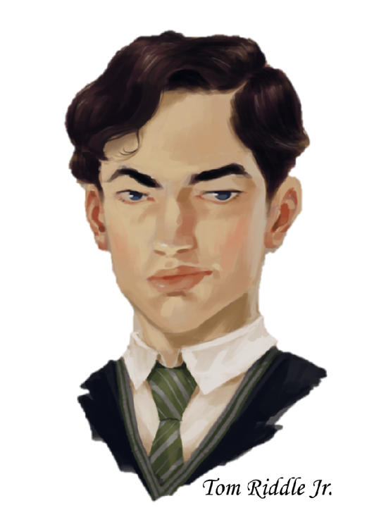

Ginny motioned with her wand, and Rigel’s form floated over the lip of the hole. As she tried not to think about being suspended by wand-point over a bottomless pit by a psychotic eleven-year-old in a girl’s bathroom of all places, Rigel caught a glimpse of white vapor peaking through the crack of one of the stall doors, and then a transparent head poking through it.
Myrtle.
She kept her face blank, but begged Myrtle with her eyes to go, to tell someone what she’d seen, to help her. Myrtle’s eyes were wide and frightened, but she nodded once before ducking her head back into her stall as silently as she’d popped it out.
“Don’t bother with the pleading expression,” Ginny said, smirking, “You should be honoured. You’ll be the first Slytherin in fifty years to see Salazar’s Chamber of Secrets. See you at the bottom. If you’re still alive.”
The Gryffindor flicked her wand down sharply, and then Rigel was falling, swift and silent, into the darkness.
*
Myrtle was not afraid, exactly. She knew that she was dead, and that hardly anything in the world was a danger to one such as her, and it was not a fear of pain or injury that held her, huddling in her toilet like an abandoned child.
It was that girl. Petite, because wouldn’t she have to be? Long, beautiful red hair that probably never curled a day in its life. Pretty, pert nose; cute, little freckles; skin as fair as any storybook princess could ever hope to have. That girl with her confident expression, straight posture, cold eyes. Myrtle felt alive again—alive and miserable, trembling with fear, because any second that girl would turn and see her, sneer, laugh, and let slip a nasty jeer if her friends were near enough to appreciate the taunt. She was nauseated, and if she had a body it would be sweating profusely. Any moment the redhead would find her—hiding in a stall never helped for long. The other girls knew where she liked to hide by now. They would find her, take her books, tear her robes, pull her hair. They would laugh, and douse her with water from their wands, and then laugh some more.
“You think that straightening spell is fooling anyone, Myrtle?”
“What’s with these robes? Pretending to be rich, are you? If you father had any real money he’d have fixed that face of yours.”
“Nice glasses. You don’t need them, do you? Oops—you’ll have to fish them from the toilet, I guess.”
“Ugly…”
“So pathetic.”
“Always hiding away in here.”
“No wonder she smells like shit.”
“I hear she has… accidents. Can barely make it through a whole lesson without running to that bathroom.”
“What a joke.”
“Loser.”
Myrtle shook her head so fiercely, but the voices wouldn’t go away. She could feel herself crying, the water boiling around her—
Water. Toilet. Myrtle opened her eyes, and met the inside of the u-bend with a relieved sigh. She was dead. Those girls weren’t there anymore. They couldn’t hurt her now. She floated up into her stall, listening carefully. She didn’t hear anything, so the ghost carefully poked her head through the door of her stall once again. There was nothing. Before, there had been a huge hole in her bathroom floor, but that was gone, too.
Maybe she had imagined the whole thing. Myrtle floated about, inspecting every inch of her bathroom, but there was nothing out of place. It was as if the gaping pit where the sinks should be had never existed. But it had seemed so real. That girl with her pretty, pitiless eyes. The one who had thrown a book at her head—she was almost sure it was the same girl, though she’d been in the u-bend when it fell through her and had only seen the back of the girl’s head as she ran off.
And that Black boy. He was so pretty, Myrtle thought with a smile, and he never laughed at her, or even called her names. He wasn’t like the other boys. Myrtle floated around the sinks once more. She was sure she saw him being suspended over the hole by that wretched girl. He had looked at her, his big, pretty eyes so wide and imploring. Like he needed her. Like he believed in her.
Myrtle floated upright with a determined feeling in her chest. She wouldn’t let him down. She would go to his common room. She was fairly certain she could access the pipes in the Slytherin dormitories by going through the kitchens and then looping through the dungeon drainage system… yes, she could do it. She ought to at least check and make sure she’d imagined it. If Black was in his common room, then at least she had a good excuse to see him again. If he wasn’t… well, then he really did need her.
She dived quickly into the nearest toilet. Don’t worry, my prince. I’ll save you!
*
Draco paced back and forth before one of the Slytherin fireplaces. Rigel was late. It was only twenty minutes, but that was a lifetime in terms of the amount of trouble Rigel Black seemed capable of stumbling across. Millicent and Theo tried to calm him down, but Draco wasn’t in the mood to be placated, and Pansy was the only one good at it anyway. Blaise merely watched him pace, a taunting smirk at the edge of his mouth that made Draco want to throw one of the dark-skinned boy’s shoes into the fireplace, just to watch his mouth gape open like a codfish.
Draco controlled himself, as the last thing he needed right now was a terse letter from his father about how Malfoys did not set their companions’ shoes on fire. No matter how annoyingly they were smirking. Draco would be very surprised, however, if his father had never experienced a similar urge. He had been friends with Uncle Severus for a couple of decades, after all.
Ten minutes later, Draco could feel his nerves stretching to the limit. Uncle Severus would never keep Rigel so late. It was now officially past curfew, and Draco could see Selwyn across the room checking her list of those who would be out of the common room on various business against those who had returned. When she turned to look at the second-years with a frown on her face, Draco allowed his face to frown back at her.
Selwyn walked over, her face tight, “Tell me Rigel Black snuck in when I wasn’t looking.”
“He has not yet returned,” Draco said flatly, “Nor has Fairister, his escort.”
Selwyn looked ready to curse. She strode sharply to the portrait of Salazar Slytherin, who was as usual observing the goings on in his common room with patient wariness. “Lord Slytherin, please inform our Head of House that Prefect Fairister and Rigel Black have not returned to the common room.”
“He is aware,” Slytherin’s portrait said evenly, “The prefect’s Monitoring Charm was compromised, and Master Snape informed me of his intention to investigate before leaving his office. He bade me explain the circumstances to you, Head Girl Selwyn, in the event that he did not return with the students before evening curfew began.”
Selwyn did curse that time, and Draco could feel his face losing blood rapidly. If the prefect supposed to be protecting Rigel had been attacked, it didn’t mean anything good for Rigel. He was about to ask Salazar if he’d heard anything from other portraits in the meantime, when his vision clouded over in white. It took him a moment to stop violently shuddering before he realized a ghost was floating nearly on top of him, obscuring his vision and setting a chill into his bones.
Draco stepped backwards rapidly to put some distance between the specter and himself, and blinked when he recognized the bespectacled ghost. “Myrtle?” he said, frowning, “What do you want this—”
“Where’s Black?” the ghost interrupted impatiently. She seemed to be craning her neck to look about the common room, “Is he here?”
“No,” Draco snapped, “He’s not. He’s in trouble—”
“I know!” The ghost looked almost triumphant as she spoke quickly, “I knew it wasn’t a dream! I saw him—I saw Black being kidnapped!”
“Kidnapped?” Selwyn said sharply, “Explain.”
The ghost looked around at Selwyn with wide eyes. Her chin wobbled, and then she caught sight of the other students in the common room, all staring at her, waiting for her to continue. Myrtle blinked, smiled a bit nervously, and said, “Maybe I could tell you… somewhere else?”
Selwyn glanced around at the watching students and jerked her chin toward a corner of the common room. She frowned but didn’t protest when Draco walked over with her, merely erected a privacy ward and bade the ghost continue her report.
“It happened in my bathroom. I saw the whole thing. That girl kidnapped my—I mean, Black. She had him levitating, his arms all stuck to his sides, over this big, black hole. She dropped him into it! It was…” the ghost paused to take a shuddering breath, “Horrible.”
Draco would have killed the girl, if she weren’t already dead. How dare she look thrilled when Rigel’s life was in danger?
“There isn’t any giant black hole in your bathroom,” Selwyn said with a serious expression.
“The girl opened it in the floor,” Myrtle said, “She slammed the door so loud coming in that I heard it down in the u-bend, so of course I came up to see what the fuss was about. She was talking to herself, too. Quite mad, I’m sure.”
“Who is she?” Selwyn asked urgently.
“No idea,” the ghost had the nerve to shrug at them, “She wasn’t really that pretty. Stumpy, too. Probably a midget.”
“What kind of robes did she have on?” Selwyn said through gritted teeth.
Myrtle frowned in concentration, “Gryffindor… I think. I might just be remembering wrong because of the red hair—tacky, if you ask me. I bet she dyes it.”
Draco could see the exact shade of red swimming before his eyes as his mind sharpened in realization. “Weasley,” he hissed, “That evil, lying bint.”
“You don’t know for sure—” Selwyn began, but Draco cut her off.
“She was acting so strangely around Rigel,” he said, becoming angrier with each word he spoke, “And Rigel was trying to help her, and she was the one who—who—” he let out a grown in frustration, “What else happened? Where was Fairister?”
Myrtle blinked at him in confusion, “Who? It was just the girl and Black. She came in, all crazy and ugly, and started hissing all of a sudden, and then there was just this huge black hole that went down, down, down with no end in sight. She levitated Black over the edge of the hole and just… dropped him. I couldn’t watch. When I looked back, the hole was gone, and so was the girl. Then I came here to tell someone.”
“Why would Weasley drop Rigel down a giant hole?” Selwyn asked, somewhat skeptically, from the couch.
“She said she was taking him to see the Chamber of Secrets,” Myrtle said, shrugging.
Draco and Selwyn both inhaled sharply. Salazar Slytherin’s portrait seemed to be frozen in shock. The next moment, the founder’s expression melted into a snarl, and he disappeared from his portrait before anyone could stop him.
“For the love of—Expecto Patronum,” Selwyn enunciated clearly, a scowl on her face. A silver wolf sprang from her wand tip, and Draco was quite impressed she could cast a patronus while so obviously upset. She must have very strong force of will. “Message for Professor Snape. According to ghost intelligence Rigel Black has been kidnapped by another Parselmouth, and taken to the girl’s lavatory on the second floor. The second Parselmouth is possibly a young girl with red hair, and reportedly opened a passage of some kind within the bathroom before closing it once more. The passage is said to lead to the Chamber of Secrets.”
The patronus sprang swiftly away, carrying Selwyn’s message with it. Draco clenched his fist, but he knew there was nothing he could do at this point. Uncle Severus would save Rigel. All Draco could do was wait.
*
Minerva McGonagall was almost finished grading a particularly disappointing stack of third-year essays when the silver phoenix flew through her office wall to hover before her. Her heart clenched automatically. Albus never sent a patronus with an invitation to tea. The phoenix’s presence meant danger, immediate and pressing.
“Come to the girl’s lavatory on the second floor,” the phoenix said with the Headmaster’s voice. Minerva could honestly say she had never expected to hear that particular sentence uttered through the Headmaster’s patronus. At the added, “A student needs our help,” however, she summoned her wand in a blink and only paused to fling open the door before transforming into her Animagus form.
As a tabby cat, she was swift and silent, like a ghost herself as she ran through the familiar corridors. When she rounded the corner and caught sight of the girl’s bathroom, she was compelled to change back smoothly in order to demand an explanation from those standing quite uselessly in its doorway.
“What has happened?” Minerva asked, looking to Albus as she said it, though she noted the presence of Severus and Pomona as well.
The Headmaster turned his wizened face to hers, and the look in his eye was not one she would ever find comfort in. It was a hard look, a serious look, and Albus only wore it when someone he’d meant to protect was in very real trouble.
“Rigel Black has been kidnapped, Minerva,” Albus said gravely, “The trail ends here.”
“I heard him call out for help,” Pomona said sadly, “I was up on the sixth floor, but his cry echoed up the Main Stair. Clever lad. I rushed down immediately, and heard one set of footsteps go down this corridor. I sensed the ward on this bathroom immediately, and set about tearing it down. It was short work, but when I opened the door there was no one inside. I thought I had been tricked, the ward put up as a decoy to shake me off, until Severus appeared.”
Minerva looked to Severus, who was glaring viciously at everything—including her, for some reason.
“Mr. Black’s escort, Prefect Fairister, was attacked as they made their way back from my laboratory,” Severus said. His voice was rough with impatience as he listed events as succinctly as possible, “I found Fairister stunned in the dungeons, but no sign of Black. I levitated Fairister to my office, sealed the wards for his protection after informing Salazar’s portrait of the situation, and began a sweep of the dungeons. Not long after, I was met with the Head Girl’s patronus. According to Selwyn, a ghost reported Black as having been kidnapped in this very bathroom. The account is brief, but suggests the kidnapper to be a Parselmouth—likely the one behind the petrifactions as well. According to this ghost’s testimony, Black was taken through a passage of some kind, which was then resealed behind the kidnapper. The passage purportedly leads to the Chamber of Secrets, but we are as yet unable to locate it.”
“Did the ghost say who was responsible?” Minerva asked, a hand going unconsciously to her throat.
“Oh yes,” Severus snarled, “A Gryffindor girl with red hair.”
Minerva flinched, and did not allow herself to feel hurt when Severus’ lip curled in satisfaction. “I see,” she said, “Then the threat is a student—”
Albus interrupted with a sharp shake of his head, “A Parselmouth in Gryffindor? Unlikely—”
“Do not attempt to gloss over this, Albus,” Severus said sharply, “The report clearly implicated—”
“My dear boy, I am certain that there is indeed a young Gryffindor involved in all of this,” Albus said calmly, “But I am equally certain that she is as much a victim as Rigel Black. There is one other Parselmouth whose hand in these happenings cannot be doubted.”
“And you believe his instrument of choice to be Ginevra Weasley?” Severus spat, “He has no access to her—”
“Enough!” Pomona shouted. The short herbologist glared around at them all, “There is at least one, possibly two students in very real danger right now, and you will not stand here arguing like hens if I have anything to say about it. Albus, how do we uncover the passage?”
The Headmaster shook his head slowly, “If it was indeed accessed by Parselmagic, it will take some time.”
“Well, get started, then,” Pomona said, puffing up like an offended saberlion.
Dumbledore led the way inside the small, flooded bathroom. The water soaked the ends of their robes, dragging at their steps as all four of them walked the room from top to bottom, each seeking with their senses any sign of a passageway.
It was Severus who found the snake engraved on the side of one of the taps, but even with that point of reference, neither she nor Pomona could sense even the slightest magical trace of the wards and spells they knew must be layered before their eyes.
“They don’t call it being Slytherin for nothing,” Pomona muttered darkly, “I can’t sense a blessed thing. Severus?”
Severus had his eyes narrowed in concentration, “There is something familiar in the air here, but whether it is connected to the passageway…” he shook his head with disgust, “I cannot be certain.”
“Could it be young Mr. Black’s magic you sense?” Pomona suggested, “A child gives off quite an aura when afraid, as I understand it.”
“No,” Severus said stiffly, “Black has no aura, and I have only analyzed his core the once. I would not be familiar enough with his magic even in the unlikely event that he was discharging it.”
“The… other student’s magic, then?” Minerva asked, not quite able to say “Gryffindor student” aloud. Severus’ eyes mocked her for her weakness as he answered.
“It is Dark,” the Potions Master said flatly, “Miss Weasley’s magic would not match, even were I familiar with it. No, this magic I have sensed before. Often, I suspect, though it is too faint to place.”
“Faintness should not affect the magic’s signature,” Albus commented lightly.
Severus scowled, “I know that. The residue is familiar, and yet not. As though the magic I ought to recognize has been changed somehow, twisted or blended into something half-way unrecognizable.”
“Could it be his?” Albus pressed, “Imagine it working through a child’s magic. Could it be a combination of his magic and… the student’s?”
“How can I know such a thing?” Severus snapped. He paused at the look in Albus’ eyes, and sighed, “Perhaps, Albus, though I know not how even he would work such a thing. It could as easily be Salazar’s magic I sense, however. Perhaps I am familiar with it merely as the Slytherin Head of House, living as I do in his chambers, labs, and offices.”
“Will it be of any use re-opening the passage, though?” Pomona wondered aloud.
“Why don’t you just blast open the floor?”
They all turned to see the ghost, Myrtle, or Moaning Myrtle as Minerva believed some of the students called her, sticking her head curiously out of a stall at them. “It seems easier than trying to make the floor open up again,” Myrtle shrugged.
“Unfortunately that won’t do any good,” Pomona said gently, “Below this bathroom is the first floor. There is no actual tunnel underneath our feet. Rather, a porthole of sorts is grounded in this bathroom. The passageway is folded space, and exists in a dimension that crosses through our own, but only at two points, here and wherever the passage leads. It’s a shortcut of sorts to another place entirely. A bit like holding the space a wizard might apparate through open eternally, but only making it accessible under certain circumstances. Usually a trick or spell that triggers the wards concealing the porthole. In this case, it is likely to be a password, but one which can only be spoken in Parseltongue.”
Myrtle blinked behind her glasses, utterly perplexed, “But what if blasting the sinks apart triggered the porthole?”
“That is unlikely,” Minerva said sharply, “In fact, destroying the physical grounding point on this end would probably render the passage entirely unusable, trapping whoever is beyond it indefinitely.”
Myrtle’s eyes went wide, “Ooh. So you’re all going to… guess the password?”
“As none of us speaks the tongue of snakes, that course of action isn’t likely to do us much good,” Snape snapped, eyes flashing, “If you have nothing useful to add, please be silent while we attempt to unravel Salazar Slytherin’s not inconsiderable wards.”
“Provided we can locate them,” Pomona muttered sourly, “I can’t sense a single discrepancy, not one trace of a ward or concealing charm, even when I know the air must be thick with them.”
“Myrtle, if you would be so kind, please find Professor Flitwick and direct him here,” Albus said, “We may be in need of his expertise.”
Myrtle sent them all a disappointed pout, but zoomed off dutifully through a wall.
“And now to work,” Albus said, turning his wand on the taps, “If we cannot sense the magic concealing the passage, we must attempt to provoke the magic into revealing itself. Please cast any revealing charms you can think of. Probing charms, analysis charms, anything that might trigger a latent defensive spell into action. Salazar would surely have protected his passageway somehow, in case someone came too close to his secrets.”
“We should attempt this one at a time, then,” Minerva said briskly, wand at the ready, “So that the ones not casting can be prepared for any surprises Slytherin’s defences send in response.”
The other three agreed, and they set to work.
*
Eternal blackness, Rigel reflected, turned out to be a lot less eternal than advertised. She fell for approximately half a second, and then she was on something that was a bit like the ground, only it crunched when she moved her feet experimentally. The spell on her arms had not lifted, and neither had the silencing charm, so she couldn’t even hear her own grunts as she squirmed herself into an upright position.
A moment later, Ginny landed in a crouch next to her, sensible school shoes cracking the small bones littering the ground around them with ease. They looked like rat bones, but there were also a few other, larger-mammal bones mixed in by the looks of it. She recognized rabbit ribs, bat wings, and a few spinal columns that might have come from deers, but she had only used deer bones in a potion once, so she couldn’t be sure.
“Welcome,” Ginny said, gesturing grandly to the oversized sewage tunnel they were sitting in, “To the Chamber of Secrets.”
Rigel looked around with raised eyebrows. Perhaps Ginny was more crazy than evil, after all.
Ginny flicked her wand and Rigel was levitated once more. She floated along docilely behind the first-year as Ginny began walking steadily through the tunnels. Ginny didn’t speak to her along the way, so Rigel was left to memorize the route in silence, and set her mind to figuring out as much of this mess as she could.
Ginny was apparently a Parselmouth. Ignoring the obvious problems with that phenomenon, it seemed reasonable to conclude that Ginny had been the one to petrify all those other students by controlling the basilisk. Ginny was also the one to attack Rigel all those months ago, probably to get her hands on belladonna, so that she could kill the roosters. Ginny was likely the one who had thrown the diary at Myrtle, since Rigel didn’t recall her being at the lake then, which meant that Ginny was connected to the journal in some way. That explained why Ginny panicked when she saw that Rigel had the journal, and why she decided to attack Rigel, likely fearing that Rigel knew everything.
There were too many things it didn’t explain, though. It didn’t explain why Ginny had tried to get rid of the diary, since she didn’t seem to be getting cold feet at the moment. It also didn’t explain why she would attack people in the first place. Ginny had no motive, as far as Rigel knew, to attack all of those students. Riddle was the one who gained from the attacks, and Rigel had heard him as good as say that he was the one… who…
Riddle. Tom Marvolo Riddle.
Rigel wanted to slap herself. TMR—could it get any more obvious? They weren’t a student’s initials, they were the initials of one of the most powerful people in the wizarding world. How could she have missed it? So the journal had a connection to Riddle. That meant Ginny… worked for Riddle? Surely not. She was eleven, and far too young to have decided what political affiliation to support. And then there was the Parseltongue. True, it had showed up fairly randomly in Rigel, but the Potters could have got it from the Blacks, who had married in a Parseltongue or two throughout the ages. As far as Rigel knew, the Weasleys had never introduced the gift anywhere near their line.
After thinking things over, she decided she was more confused than ever, and gave it up as a bad job. She should focus on getting out of this situation first, and then try and figure out what it all meant.
They turned a corner in the network of sewers, and came before a great seal. It was obviously a mechanism of some kind, and Rigel suspected it was a door.
Sure enough, Ginny hissed out an, “Open,” and the stone unlocked itself and moved aside, revealing a cavernous hall, easily twice the size of the Great Hall, and lit by an eerie green light that seemed to come from everywhere and nowhere at the same time.
“Well?” Ginny asked expectantly, “What do you think, little snake?”
Rigel lifted an eyebrow, and Ginny chuckled indulgently. She seemed much more relaxed now that they were isolated so far below (presumably) the school, “Ah, yes. Allow me.” With a flick of her wand—and how on earth was Ginny so proficient with silent casting?—the silencing spell on Rigel fell away.
“I think Slytherin’s passwords are a bit unoriginal,” Rigel said honestly.
Ginny smirked, “Yes, that’s right. You can understand the serpent tongue too, can’t you Mr. Black? What a special moment this is, two Parselmouths meeting face to face—well, sort of.” She chuckled again, an indulgent, condescending sound that reminded Rigel of someone she’d met before. “In any case, don’t you want to know why I’ve brought you here?”
Rigel looked around the great, empty room. It was sort of sad, really, all this space just collecting dust. This was Salazar’s great Chamber of Secrets? It was almost disappointing.
“Well?” Ginny said impatiently. Rigel wasn’t sure what the girl wanted from her. The redhead seemed to be in a grandstanding mood, which was an odd attitude for someone who went around petrifying and kidnapping students. Then again, she thought, remembering her encounter with one Lee Jordan, justification seemed to be important to people like that. As if they wanted you to understand why they did it. She supposed they wanted you to know that they had reasons for every seemingly unreasonable action.
“You’ve brought me here to petrify me, right?” Rigel guessed. It would fit the pattern.
“Oh, no,” Ginny said, smiling smugly now that Rigel was playing along, “I petrified the others before they saw anything but my beauty’s eyes. You… you know far too much to be petrified. The petrified ones wake up, you see.”
“You could modify my memory,” Rigel suggested grimly.
“Where’s the fun in that?” Ginny asked coyly. She fingered the wand in her hand absently, almost thoughtfully, “I’m not sure I could, in any case. Obliviation is delicate work. At the moment I haven’t the… control necessary to ensure a full memory wipe.”
“I’m sorry to hear that,” Rigel said, somewhat automatically. The conversation was beginning to feel a bit surreal.
Ginny laughed openly, “Oh, but you are amusing. She didn’t tell me you were amusing, Black.”
“She?” Rigel asked.
Ginny only smiled mysteriously, “Don’t you have other questions, little snake?”
Rigel blinked, “Well, I’d like to know why you petrified all those kids. And Lockhart,” she added as an afterthought.
Ginny blinked slowly, the smile melting away from her face. Her eyes were over-bright, like someone who’d taken too many doses of Poppy’s Pleasure in one night. She had the same sort of half-glazed, intense look about her face, too. “That is a complicated question. There are answers, and then… there are answers.”
Rigel nodded thoughtfully, “Perhaps it would be better if you started at the beginning. I could ask questions as you go.”
Ginny’s mouth twisted into a semblance of a smirk again, “For a Slytherin you’re awfully bad at subterfuge, Black. Basic hostage behaviour: keep the bad guy talking until help arrives. It won’t work. Not because I won’t fall for it—I’ll talk all you want. I’ll answer every single one of your questions, satisfy your curiosity completely, and then answer questions whose answers you couldn’t care less about. Do you know why? Because it doesn’t matter how long I talk. No one is coming to save you.”
Rigel wasn’t sure if the universe was testing her or not. It seemed too much like an ironic taunt from Fate. Surely no one in the world was so arrogant, so ridiculously confident, as to spit in the face of Fate so blatantly. It wasn’t asking to eat your own words. It was handing the universe the ingredients and then giving Fate a recipe for your own disaster.
Still, Rigel wasn’t going to refuse a gift from the god of irony, if indeed Ginny Weasley was as insane as she appeared to be. “Why do you say that?” she asked, “Of course people will come looking for me.”
“Look they will, but find you they certainly won’t,” Ginny said smugly, “No one but a Parselmouth can get into the Chamber of Secrets once it’s sealed. Albus Dumbledore himself can stand at the entrance all day. He’s not coming in until I open the passageway again.”
“I could open the passageway,” Rigel pointed out, “The password isn’t very hard to remember.”
“Amusing,” Ginny said, though the sneer on her face belied her comment, “But unlikely. You’d have to get through me, and you’re not in any position to pose a challenge.”
Glancing down at herself—hands stuck to her sides and still hovering a foot off the ground under the influence of Ginny’s levitation spell—Rigel had to concede that point, at least. Still, if she kept Ginny talking long enough, she would make a mistake. Talking might even be the mistake, if the Headmaster could in fact find a way to access the Chamber.
“Someone will notice you’re gone eventually, though,” Rigel said reasonably, “If you want to get away with this, you can’t stay down here for very long with me.”
Ginny tilted her head, “Someone will notice Ginny is gone, of course. I’m counting on it, in fact. Every good plan needs a scapegoat, you know.”
“So your plan is to pin the blame on… yourself?” Rigel was confused, and said so, adding, “That seems like the eventuality you’d want to avoid.”
Ginny chuckled softly, “Yes, perhaps I should begin at the beginning. Everything will make sense to you, once you know the whole of it.”
“I’m sure it will,” Rigel said.
“Shut up,” Ginny snapped, “Just listen.”
She conjured a chair for herself to sit in, and with an errant flick of her wand dropped Rigel none-too-gently on the ground. Considering the amount of grime that had accumulated there, Rigel almost wished she was being levitated again.
“The story begins fifty years ago, in this very Chamber,” Ginny began.
Rigel listened attentively, hoping to hear something, anything that she might use to get out of this mess alive.
*
Minerva breathed slowly through her nose to calm the rising impatience she felt at watching Filius, too, fail to detect Salazar’s wards. The Head of Ravenclaw House was no slouch at ward deconstruction, having studied under a Ward Master from Italy for nearly a decade in his youth. Yet even he appeared baffled by the bathroom.
“If you hadn’t told me there were wards here, Albus, I would have told you the room was clean,” Filius shook his head wearily, “I’ve tried all I can think of—even some of the more aggressive revealing charms turned up nothing. Usually a ward at least reacts to the presence of spells like that.”
Severus sneered at them all, in that way he had when he was about to reveal to them all why Slytherins were the better House. Sure enough—
“This passage was not concealed by a Gryffindor, Filius,” Severus said, “Slytherin’s wards will not react when reaction means detection. They were designed to be undetectable, after all. No, these wards will remain hidden until their key unlocks them, as proper wards should.”
“If you are done admiring the wards, Severus, we’ve a need to figure out how to break them,” Minerva said, a bit tartly. Her temper was getting the better of her, and no surprise with two students in an unknown, though likely perilous situation.
Severus opened his mouth to offer up a scathing rejoinder, no doubt, when Nearly-Headless Nick dropped in from the ceiling to interrupt.
“News from the Tower, Madam McGonagall,” he said in his usual deep, slow tones, “The prefects bade me tell you that one of the House of Lions is presently unaccounted for. A Miss Weasley disappeared sometime after dinner, and has not been seen henceforth.”
Minerva felt her throat close up, and knew that her lion’s part in these dealings could not be denied any longer, “Thank you for your swift report, Sir Nicholas,” she said, her voice hoarse, “We are looking for the girl presently. Please inform her brothers that every effort is being made to locate Miss Weasley and return her safely.”
Severus scoffed derisively under his breath, but did not contradict her as the ghost nodded regally and floated upwards through the ceiling once more.
Minerva turned toward the serpent-engraved sink with stony-eyed determination. Time for her to remind Severus Snape why sometimes courage was more clever than caution.
“If the ward is indeed Slytherin in nature, then I believe Severus is right,” Minerva said frostily, “It very likely won’t respond to provocation.”
“As I have been attempting to explain—”
Minerva spoke over Severus with a slight smirk of her own, “It might, however, respond to fear.”
“Minerva?” Albus took a cautious step toward her, “What do you mean to do?”
“I am going to shoot the most destructive spell I can think of at that tap, Albus,” Minerva said, “At the very last moment, you will shield the tap by countering my curse. You must wait until the wards have had time to sense my curse approaching—in the event that the wards cannot repel it, you must protect the anchor point from being destroyed. Filius, Severus, Pomona, you will ready yourselves for the ward’s reaction.”
“You honestly believe there will be one?” Severus asked, a strange expression on his face. Minerva knew he didn’t want to believe a ward created by Slytherin himself would respond to a threat like a cornered animal might, but at the same time he hoped it would. He cared for his pride, but Minerva suspected he cared for his students a great deal more.
“You know a lion’s flaws, Severus,” Minerva said flatly, “Trust me to know a snake’s. On three.”
She counted to three, and said, “Illuminare Verite.” A blast of purest light erupted from her wand. This was the Aria Candle, a spell intended to diametrically oppose Darkness in all its forms. Any spell of Dark making that came into contact with Aria’s Candle disintegrated, unless countered properly.
An instant before the light reached the sink, Dumbledore wove a Depasco Shield over the tap which consumed the Aria Candle without delay. An instant later, however, a tremor like a localized earthquake shook the bathroom, rattling the stall doors on their hinges and sending Pomona to her knees with surprise.
“Lock onto the signature,” Albus shouted. The Headmaster extended both hands toward the source of the earth tremor, and Minerva knew he would be pulling at the magic with his own, trying to make the wards on the passageway continue responding as long as possible. It was up to them to make the most of the opportunity.
Minerva extended her magical senses like a whip toward the sink. She could feel the magic around the tap, now, thick and compacted in the air, but she was having trouble gaining purchase on it. She knew what she needed to do—in theory she could use her magic as a raw template, latch onto a piece of foreign magic and imprint on it, in a way. She needed to use her own magic to copy sections of the magic she could get a hold of, so that she’d be able to either reproduce that magic or, using knowledge of its form, undo it.
Unfortunately, Minerva had never had a talent for auras or imprinting magics. She knew of several of her students who would be better suited to this task than she, the Weasley Twins being two of them. Still, she had to try. It was her duty as Deputy Headmistress to do all that she could to protect her students.
The passage wards quickly began to withdraw, perhaps sensing no more immediate danger, and Minerva let out a frustrated growl as the magic slipped through her senses like oil. She could recognize it, now, but she didn’t have a lock on any part of it. Soon it would be hidden again, with no way for her analyze it further. She made a last, desperate effort, but it was for naught. She hadn’t been able to imprint anything. The frustrated look on Pomona’s face told her the herbologist had experienced the same difficulties. But—
“Got it,” Filius panted from across the room, “I’ve got at least part of the pattern. I think I can undo the concealing charms, at least.”
“I as well,” Severus said lowly, a fiercely triumphant gleam in his eyes, “I can see the wards, now. Well done, Minerva—we may unravel this yet.”
*
“Many years ago, when Hogwarts was not so exclusive as it is now, purebloods went to school with halfbloods, and even mudbloods,” Ginny said, her nose wrinkling with distaste at the thought, “There was a boy who came to this school, a talented, intelligent boy, who realized what a crime it was, having the school all mixed together like that. The smart, talented children, the purebloods, were all forced to learn at a slower pace because of the stupid ones, the halfbloods and mudbloods who couldn’t find their own magical cores, much less keep pace with the children who truly deserved to be wizards. This boy hated being held back for the sake of others, and he resolved that one day he would fix the situation.”
“Wasn’t it only for a little while, though?” Rigel asked, “A lot of children come here ahead of other kids, because their parents teach them spells at home, but the ones who don’t know anything catch up quickly.”
“That is because they are all purebloods,” Ginny said dismissively, “Back then, there were mudbloods in the school. What a joke—barely enough magic to support a stable core, and they come waltzing into one of the oldest magical school in wizarding history like they were going on holiday to broomstick camp. It didn’t matter how hard they tried, their magic was plainly inferior.”
Rigel supposed that muggleborns did on average have smaller cores than children born into wizarding families, possibly because the magic did have to be saved up over generations before being able to manifest as a core in a child, but children of muggleborns had perfectly normal-sized magical cores. And having a smaller core didn’t mean you couldn’t learn magic the same as everyone else—it just meant you couldn’t do as much magic in a row as people with larger cores. Still, Ginny continued.
“The day came, a few years later, when the boy finally had a chance to change what needed to be changed,” the redhead said, a fond smile on her face, “You see, this boy had a very special gift—he could speak to snakes. Slytherin’s Heir, he was, and Slytherin’s Chamber he finally discovered in his fifth year. Do you know how hard it was to find this Chamber, Black?”
Rigel shook her head, “I imagine it was particularly difficult for a boy, since it was hidden in a girl’s lavatory.”
“Yes, it was difficult,” Ginny said, “He talked to every snake in the castle. He scoured the tapestries and statues and paintings for a serpent to question. When he became a prefect, he spent many nights out patrolling, looking in all the hidden places it was too suspicious to go to during the day.”
“How did he know the password was ‘open?’” Rigel asked.
Ginny sent her an amused look, “Surely you’ve discovered the override on most of the doors and passages in the dungeons, little snake. Slytherin’s Heirs don’t need passwords or keys. When they command a way to be open, open it shall be.”
“Clever,” Rigel said, “And what did the boy find in the Chamber? A basilisk?”
“Ah, yes, my little pet. Would you like to meet her?” Ginny asked curiously, “She rarely gets a chance to talk with anyone—so misunderstood, she is. I can call her here, if you like.”
“No, that’s all right,” Rigel said, swallowing thickly, “I’d rather hear the rest of your story.”
“You’re no fun,” Ginny sneered, “Don’t worry, it’ll only take a moment.”
She stood and raised her palms toward the far end of the hall, where an enormous statue of Salazar Slytherin himself stood proudly at attention. “Speak to me, Salazar, greatest of the Hogwarts Four!”
The statue’s mouth shuddered and slowly, inch by inch, began to gape open. Rigel waited long enough to discern a shadow moving within the shadow of the mouth, and then she shut her eyes tightly with no small amount of fear. Her heart was pounding wildly and she hated being blind, but she would hate being dead more, she told herself, so she kept her eyes clenched shut, despite the scrape of scales against stone that was coming slowly closer.
Ginny laughed darkly, “Oh, you should be afraid, little snake. But here, I do like people to look at me while they are afraid. It makes it sweeter, when the fear turns to terror, and hopelessness, and defeat.”
Rigel was now very sure there was a piece of the puzzle she had yet to find. Ginny didn’t sound like an eleven-year-old. She sounded like someone practiced in cruelty, like someone who reveled in it time and again. But she couldn’t be, Rigel thought, her brothers wouldn’t love her half so much if she had been so cruel for so long. What had made her this way? When and how could Ginny Weasley have changed so much so quickly?
“Come here, pet,” Ginny hissed softly, “That’s it, clossse your eyesss. I have a friend for you to meet, but he isss not ready to meet the gaze of one sssuch asss you jussst yet.”
Rigel hated herself for shuddering as the great snake answered back, “I sssmell a flessshling, Massster. I am ssso hungry. Let me rip, tear, feassst…”
“Enough,” Ginny snapped, “You will eat when I sssay you will, sssnake.”
“Yesss, Masster,” the snake answered lowly, “Pleassse, Massster.”
“My apologies, Mr. Black,” Ginny said casually, “This one’s mind is not what it used to be. Too many years in isolation, I expect. Ah well, even for a basilisk she’s getting on in years. Her usefulness will run out soon, I expect.”
Rigel nodded shakily, not sure what else she should do. A moment later, Ginny’s hand reached out to grab Rigel’s left hand. She released the spell tying it to Rigel’s side and Rigel attempted to break free with a violent tug, but Ginny was strong. Too strong to be natural. She held fast to Rigel’s hand and drew it away from Rigel’s body, out toward the empty air.
Her hand met cool scales and Rigel barely bit back a whimper. The basilisk was right beside her, breathing slowly beneath her touch. Ginny moved her hand sideways and up a little, until Rigel felt an armoured ridge attached to a thin, wrinkled membrane of some kind, which trembled slightly under her touch. It was the basilisk’s eye, she realized after a tense moment. It was closed.
“You see?” Ginny snatched her hand away before she could attempt to claw the eye out with her fingers—not that she would have, since she didn’t know where its fangs were just yet. “Perfectly safe. You can look.”
Rigel called herself ten kinds of fool as she did it, but she was helpless without her sight, and the eye closest to her had definitely been closed… she opened her eyes slowly, looking at the ground first, then slowly, prepared to close them at any movement, looked upwards.
The basilisk was easily fifty feet in length. It curled around them like a cat, eyes definitely closed, but still extremely frightening in repose.
“Isn’t she a beauty?” Ginny asked, petting the basilisk’s nose in the most perfunctory of ways, “It’s almost a shame, really, but… all things have a purpose.” Rigel wasn’t sure what to make of that, but Ginny was content to continue talking uninterrupted, “Yes, Salazar’s monster was one of many treasures the boy found in the Chamber. His ancestor left him scrolls and tombs of secrets. Knowledge worthy of even this boy’s great dreams, and far beyond the pittance taught at Hogwarts. Ritual diagrams so intricate it took him months of analysis to discover their purpose. An entire system of runes created by Salazar himself; Parselrunes that respond to commands given only in the serpent tongue.”
Rigel was intrigued despite herself. Runes keyed to Parseltongue? It was a good idea, as even with the plethora of runic systems available in many languages, it was sometimes still difficult to find a symbol for the exact meaning you wanted. She was hesitant to believe that Salazar Slytherin was the first to happen upon it, though. Parseltongue had been around much longer than Salazar Slytherin, according to lore found in the Black Family Library.
Ginny must have caught the interest in Rigel’s eyes. “Fascinating, isn’t it? You can imagine how pleased the boy was. He spent the next year learning all he could from the Chamber. And then he planned. He could cleanse the school easily enough, with the help of the basilisk, but then what? Was not the entire Wizarding World equally tainted? Was it not his responsibility, as a wizard with means and magic, to begin the necessary revolution?”
Rigel didn’t think she liked where this story was going.
“Oh, what plans the boy had,” Ginny sighed in an oddly self-satisfied way, “The world would tremble. It would burn, and from the ashes would come a new world, better and brighter and fit to be ruled by the one with the most power, the most vision. It was natural, don’t you see? Magic had blessed this boy—the rest was only destiny.”
“What became of this boy?” Rigel asked. The boy described by Ginny sounded a bit like the politician Riddle—there were pieces of SOW Party propaganda recognizable in what Ginny was saying—and yet it didn’t. Lord Riddle wanted to change much about their society, but he didn’t want the world to burn… did he?
“What an excellent question, Mr. Black,” Ginny said in a most patronizing manner, “I admit to a similar curiosity with regards to the answer to that question, but I will, of course, tell you what I can. I want you to understand everything, and perhaps once you’ve heard my story you can help me with the parts I don’t understand. How does that sound?”
“I’ll do my best,” Rigel said, “But I’m not sure I’ll be able to figure it out if you can’t.”
“Obvious, Mr. Black,” Ginny drawled, “But I’ll grant you a Slytherin’s perseverance.”
“Thank you,” Rigel said.
“Shut up.”
Ginny paced slowly among the basilisk’s coils, her hands behind her back, “The boy’s plans were perfect, foolproof, you might say. He had discovered a way to obtain power, and, after much cunning and resourceful searching, even discovered a way to keep that power… forever.” Ginny paused, a thoughtful look on her face, “And yet, the boy worried. At that moment in time, his plans were perfect, his ideals pure and his future unquestioned. He had a way to conquer time’s greatest threat—death itself—but time has other ways of undoing great men. This he knew, as a student of history, and this he feared. Many a great man had begun his quest for dominion with deepest motive and steadfast convictions, but halfway to the top these great men faltered. Do you know why, Mr. Black?”
Rigel blinked, but hazarded a guess, “They discovered that changing the world was not as easy as they imagined, and met challenges they weren’t able to immediately overcome.”
Ginny gazed pityingly at her, “All challenges can be overcome. No. These men faltered because the view from halfway up the mountain is rather attractive when you’ve spent all your life at the bottom. These men achieved some of what they dreamt of, and became content, deciding the rest of the trek up the mountain wasn’t worth the effort after all. They abandoned their ideals out of laziness and fear. You see, when a man is at the bottom of a mountain, he doesn’t fear falling down it. Halfway up the mountain, however, the bottom starts to look a lot further than they remembered. Those men forsook their original, worthy designs in order to preserve the little they had already achieved.”
It sounded to Rigel as though such men merely knew when to stop. The road to the top of the mountain was neither easy nor guaranteed, or else everyone with a set of hiking boots would stand there. Greed destroyed great men too, as any student of history also ought to know—reaching too far too soon was the easiest way to get knocked back down.
“Luckily, this boy anticipated the possibility of future hesitation,” Ginny went on, “He formulated another plan, a way to counteract time’s propensity to warp and twist that which it can lay its claws into. Do you know what the most amazing kind of magic is, Black? Come, take your guess. What magic do you find the most impressive, the most magical, to use the muggle sense of the term ironically?”
Rigel bit the inside of her lip in thought, “I suppose the most amazing magic is that which effects changes only magic can bring about.”
“Yes, very good,” Ginny said, a slightly intense smile on her face, “Like what? Can you give a specific example?”
Rigel thought some more, mostly to take up as much time as possible. It wouldn’t be destructive magic, since you could easily destroy things without magic. Manipulation magic was tempting, but one could manipulate both things and people using physics and psychology, it was just slower and more roundabout. Transformation magic was amazing, and without magical means there wasn’t really a way to completely change one thing into another, but it didn’t seem to be the answer Ginny was looking for. Finally, Rigel said what she thought the real Arcturus Black would say.
“Healing is the most amazing magic,” she said.
Ginny looked at her with intrigued surprise, “You’re correct, in a way… though not for the reasons you came up with, I expect. Preservation magic is the greatest kind of magic there is. It is magic that reverses or reduces time’s effects on the universe. Healing is one of the many magics that combat time. It preserves life, as long and as vital as it possibly can. Yes, it is the ability to preserve which makes the Magical World so worthy, so important. Witches and Wizards live three times longer than muggles naturally, and there are wizards like Flamel who live as long as they wish. All due to magic. If you want to cook a lamb today and eat it a year from now, you can do that with magic. No wizard is ever a slave to time. With a time-turner, one can stretch a day into a week before the strain of maintaining identical cores in close proximity becomes too much. Truly, there is little to fear from time if your magic is strong enough,” she declared.
Rigel thought that was an interesting way of looking at the world, and not an incorrect one. In a way, they were all fighting against time in a struggle to remain living. Could this worldview influence a boy such as the one described to dedicate his life to preserving things—like pureblood wizarding culture, for example?
“Yes, preservation magic proved to be the key,” Ginny said, “The boy knew he had to preserve himself, you see, just as he was, perfect and pure, in a way that time could never corrupt him or make him change. Imagine: perfect forever.”
Rigel studiously kept the grimace off of her face. There was no such state as perfect. And sixteen forever? She wouldn’t wish that on anyone, if it was half as bad as Snape made it out to be complaining about his NEWT students.
“The boy could not actually prevent himself from growing, and consequentially changing,” Ginny allowed solemnly, “But he was able to do something else. He found a way to imbue an object with personality among Salazar’s notes. No doubt the same basic magic that bore the Sorting Hat into existence. What the boy wanted to create was considerably more complicated than a talking hat, however. He sought to create a perfect impression of his own inner self. His knowledge, memories, ambition, cunning; everything that made him talented and special, all copied with the utmost care and imbued into a single book.”
“Book,” Rigel’s eyes widened. The journal. It wasn’t an empty diary, but a container for an immensely complicated magical construct. She frowned. She hadn’t sensed any magic in the book when she’d touched it. Was it so well-hidden?
“Yes, that book,” Ginny smirked, “And what a long fifty years it was, locked in those pages.”
“Was?” Rigel clarified.
Ginny looked amused, “I’m getting there, Black. Be patient.”
“So he created his magical construct,” Rigel prompted, still willing to play along. Surely, the teachers were already looking for her. The ward on the bathroom door would have been obvious to anyone looking for the out-of-place. They must be trying to access the Chamber, which meant all she had to do was buy time, and be patient, as Ginny suggested.
“Yes. It went exactly according to plan,” Ginny said, “As the boy’s plans came to fruition, he consulted his diary often, to make sure any new ideas were in line with the established ones. The diary made sure he stayed true to course. Then, a few months before the end of his sixth year, something went wrong.” Ginny’s face was tight now, her mouth creased at a disapproving angle as she spoke, “Everything was going fine. He was well on his way to ridding the school of its muggle taint. He had the students and faculty right where he wanted them—afraid, and willing at that point to do anything to stop the attacks.”
She was speaking, Rigel realized, of the last time the Chamber had been “opened.” The time Hagrid spoke of, with only muggleborn students found petrified, threatening messages on the walls beside them. Rigel could imagine the threats the messages must have contained—banish all mudbloods or else they start dying, no doubt.
“The boy only had one final point to make,” Ginny said, “He hadn’t killed any of the mudbloods yet—the basilisk can control its power, you know, and it merely petrified the mudbloods up to that point as per the boy’s request—but for his threats to be taken seriously, a death was necessary. The death would aid him in other ways, as well, in finalizing the steps he took to become impervious to time. There had to be an example, and the death wouldn’t have been a waste,” Ginny said earnestly, “Everything was prepared. There was a seventh-year mudblood who liked to mess around with second-year girls. He lured them into deserted corridors and… well, he would be no great loss to society, would he? The boy confided his plans to the diary, his construct approved, everything was to go ahead that night, and then…”
Rigel waited, but Ginny didn’t seem inclined to continue.
“And then?” she asked quietly.
“Well I don’t know what happened then, do I?” Ginny snapped, “I waited. I heard from him once after that, maybe twice, and he never told me exactly what happened. ‘It’s fine,’ he said, ‘don’t worry. Everything’s going to plan.’ Then there was silence. Years and decades of bloody silence. Do you know what it’s like, living in a book for fifty years, unable to even talk to yourself?”
Rigel mutely shook her head, taken aback and beyond confused. All she knew was that Ginny… didn’t appear to be Ginny at all.
“It’s agony,” the redhead spat, “Every year the magic keeping you together, keeping you alive, fades a little. He was supposed to add magic to the diary over time, ensuring its continued existence, preventing the magic from destabilizing and disintegrating or collapsing in on itself. But he didn’t. It was only through sheer willpower that I retained my personality, my knowledge, and my ambition despite the magic Time sucked from my pages—the greedy bitch.”
Ginny was near to spitting with anger now, and Rigel wondered if perhaps the personality in the diary, which seemed to be inhabiting Ginny at the moment, hadn’t held up under the strain of time as well as it thought it had. Without magic to keep it functioning optimally, the construct seemed to have become partially unhinged.
Ginny took a calming breath, and smiled humourlessly down at Rigel, “Imagine my surprise, my delight, when my maker wrote in my pages once again. ‘I have need of you,’ he says. A task at Hogwarts, my old playground, and me the only one trusted enough to carry it out. Finally, I think, we’re back on track. Get inside some first-year’s head? No problem. Be her companion as she grows, help her along until she’s formidable in her own right? Not my style, I admit, but all right. Infiltrate the Light party through the girl, undoing Dumbledore’s seat of power slowly from under his own nose? Well, now. That would take years. Why would I waste so much time when there’s easier, more direct ways of undoing Dumbledore?” The redhead shook her head sadly, “I wouldn’t, don’t you see?”
Rigel was very much afraid she did see. So Riddle’s sixteen-year-old self didn’t much care for the direction his future life had taken? Severus Snape had clearly had no part in this plan of Riddle’s. Perhaps Lord Riddle’s memory painted his adolescent self in a more forgiving light, but Snape, with his deep disdain for the arrogance and rashness of the teenaged psyche, could have predicted this rebellion without blinking.
“Oh, I bided my time at first,” Ginny’s voice said casually, “Perhaps there was information I lacked. Perhaps Britain was currently at war with another magical state, or a plague had recently decimated the wizarding population, or some other such reason Britain couldn’t afford abrupt social change or the distraction of a civil war at the current time. I agreed to my older self’s plan, spoke kindly to little Ginevra Weasley when she began pouring secrets into my pages. I fished gently for information about current events, and Ginny was all too happy to fill me in,” she paused to chuckle softly at her own pun. “My disappointment knew no bounds when I realized my failure to revolutionize the world the way I’d planned was due not to an inadequacy of the times, but to an inadequacy in myself. Well,” she amended after a moment, “Not myself. I am perfect, unchanged by time, and unwilling to settle for a life spent in mediocrity, another fat plutocrat slowly turning the political hamster wheel in circles.”
Rigel felt oddly compelled to defend Riddle Sr. against his younger self’s accusation, but quickly checked the impulse. No need to make the insane magical construct angrier.
“It became apparent that I would have to take things into my own hands,” the construct continued speaking, as though determined to lay the whole story at Rigel’s feet, “But of course, I had no hands. All I had was Ginny. Poor, scared, little Ginny. Do you know what Ginny was most afraid of?”
Like a light going on, or perhaps more appropriately like a kick to the stomach, the answer came to her. “The Sleeping Sickness,” she said, realizing how Riddle Jr., as she decided to call him, had played on that fear so effectively.
“Very good, Black,” it smiled through Ginny’s teeth so sweetly, “When her brother Ronald wrote to her of the sickness, the fear of having her mind invaded took root in her heart. I admit, I helped it flourish there. I told her stories about what terrible things wizards could do to one another’s minds. She begged me to help her protect herself. It was easy, I told her. As a mere magical construct, I could live in her head if she wanted. She could talk to me whenever she liked, and I could protect her mind from invasion. She hesitated for a little while, but soon the fear became too pressing, and she opened her mind willingly to her dear friend Tom.”
“You possessed her,” Rigel surmised, “Not completely at first, but eventually you had complete control. Ginny didn’t know she was the one opening the Chamber and petrifying kids.”
“Of course she didn’t,” Riddle Jr. snorted, “It took some time before she suspected the memory loss wasn’t just a side-effect of the meditation techniques she was trying to learn. Thanks for that, by the way. When she learnt you were studying Occlumency, too, it greatly reassured her that she had done the right thing by protecting her mind.”
Rigel felt sick, and the feeling grew stronger as the construct kept talking.
“Ginny helped me open the Chamber of Secrets, unleash the basilisk, kill the Squib’s cat, write the messages on the walls, everything,” Riddle Jr. gloated.
“You’d already possessed her when you tried to steal my belladonna,” Rigel said.
“Yes,” Ginny’s face was made to frown, “My possession was not very good at that point, I admit. I hadn’t meshed completely with Ginny’s magic yet, and so the wand rejected me when I attempted to use it for complicated or powerful spells. I had to rely on brute force to make her magic work for me, and still it was temperamental. I think our magics are just too incompatible. She leans closer to Neutral than to Light, but still… it took some time to gain complete control over her magic.”
Rigel wasn’t sure the construct had complete control, as some of its spells had been a bit shaky, a bit rushed, a bit blunt, looking back on it. Still, it had been enough to neutralize Rigel. She could still feel the shield he’d wrapped her in, like a web of sticky magic crawling over her skin, suffocating her own magic within her.
“I had to make the girl buy the poison over the holidays,” Riddle Jr. recalled, “It left my little monster vulnerable for longer than I liked, but one makes do. Yes, Ginny was exceedingly useful—until she started to notice what I was doing. She became suspicious of my presence in her head, and tried to find other ways to protect her mind, though she didn’t have much success.”
Rigel felt ashamed of herself. How many times had Ginny come to ask her about Occlumency? Rigel had seen that the girl was exhausted, stressed, and afraid, but she hadn’t looked further into the problems of a first-year Gryffindor. Her own problems had seemed so important at the time.
“Then she tried to get rid of me by throwing out my diary,” Riddle Jr. said, amused, “As if that would help. I’d cut ties with the book the moment Ginny let me into her head. If I was still anchored there, it could be used against me, after all. When I saw you with it, paging through those archives so eagerly, I knew something had to be done. Eventually, you’d figure out to whom the diary belonged, and maybe you’d figure out who was making the basilisk petrify students, too. I didn’t know how much you knew. It had to be done. This way is better, in a way. Ginny’s use only extends so far. Her magical reserves are remarkable for a child so young, but she has no natural talent to speak of. You, though…” the construct tilted Ginny’s head consideringly, “The Black scion has a prominent social position awaiting on either side of the party line, according to little Ginny’s limited grasp of the political situation. A Parselmouth, unexpectedly, which means I wouldn’t even have to hide my gift. And that trick you pulled with the Sleeping Sickness… yes, you’ve clear potential, little snake. You’ll make for a much more useful host, I think.”
“Host,” Rigel repeated numbly, “That’s why you haven’t killed me yet?”
“That’s right,” the construct said, “Your survival is guaranteed; does that comfort you? It’s going to be an impressive tale. Would you like to hear it? A glimpse of one’s future is a rare opportunity—a fitting gift for the host of Lord Voldemort.”
Rigel blinked, “Lord Voldemort is…?”
“Me,” Riddle Jr. said smugly. He lifted Ginny’s wand and began to trace letters in the air.
“TOM MARVOLO RIDDLE” the letters read.
Rigel thought for a moment that Riddle’s middle name seemed out of place between his overwhelmingly ordinary first and last names—but she wasn’t sure where Riddle’s construct was going with this.
The letters rearranged themselves at a twitch from Ginny’s wand. I AM LORD VOLDEMORT. An anagram, Rigel realized. Her French wasn’t anything to brag about yet, but she thought she got the gist of the title. Something about the flight of death, or stealing from death, perhaps. It was ominous, Rigel supposed, if a bit grandiose for an Englishman.
“It’s the name I fashioned for myself, just before undergoing the ritual that would preserve a copy of my mind in the pages of my diary. Though apparently the name never made it beyond those pages,” the construct scowled, “I fear for my older counterpart, Black. Something must have gone terribly wrong for his path to have deviated so inexplicably. I suspect Dumbledore had a hand in it,” Ginny’s features were twisted in a mask of hatred, “Perhaps the old man caught me in the act. He wouldn’t have killed me, and sending a boy of such potential to Azkaban is not his style, but his manipulation knows no bounds. A memory charm, personality suppressant, perhaps even the Imperius Curse; it would have been easy for a wizard like Dumbledore to alter my destiny, the meddling fool. And no one would ever suspect, because there I’d be, Tom Riddle, model student and upstanding citizen, as I’d always made people believe I was. Brilliant, wasn’t it? Killing me without killing me, using my own mask against me, in a way no one would ever suspect.”
Rigel thought it an interesting theory, at least. If Dumbledore controlled Lord Riddle, his biggest political opponent, then he controlled everything. It would mean Dumbledore essentially played an elaborate chess game with himself, with all of British Wizardom hanging in the balance. The very thought of such a world would scare Rigel out of her potions boots—if she thought it was true.
“He didn’t expect me, though,” Riddle said softly, “I can see through his deception like no one else, because I know what I ought to be. I can fix everything. Perhaps I can even reach out to my older self in time. For now, I can turn the old man’s game against him. With you, I will see his strategies foiled, his plans come to naught.”
Rigel understood now, though she didn’t think the construct was viewing the situation very clearly. After all, if Dumbledore controlled Riddle he would have to know about Riddle Jr., because Lord Riddle was supposedly the one who set the construct to its task at Hogwarts. Still, as someone to whom complicated plots were nothing new, she could appreciate the elegance of such a plan from an academic standpoint. As long as she didn’t think about what it meant for her as the possessed.
“You’re going to essentially do the same thing you think Dumbledore did to your older counterpart,” Rigel clarified, “You possess me, taking my place as the Black scion, using my reserved personality as a cover as you grow in strength and ability, until you’re ready to revolutionize the world. To everyone else, it will just look like the Black scion decided to change the world. No one will guess it isn’t me doing those things.”
“That’s right,” the construct said, smirking, “But I won’t have to bide my time for long. You’ll be a hero when this is all over, with considerable political capital I won’t hesitate to capitalize on. The brave young Black who saved the school by defeating a basilisk and thwarting Ginny Weasley’s dastardly plans.”
“Isn’t Ginny a bit young to have masterminded a plan?” Rigel asked, trying not to think about the actual content of what they were discussing, just focused on drawing out the time Riddle Jr. spent talking. It wasn’t going to happen, she assured herself, as long as she kept it talking.
“Oh, she didn’t come up with it,” the construct said, amused, “She was Dumbledore’s pawn. It was his scheme to petrify the students, sending the Wizarding World into a panic, and then acting the hero at the last moment by ‘finding’ the beast and slaying it heroically. All a political plot to win the support of the children’s grateful parents.”
“How did Ginny control the basilisk, if she was Dumbledore’s agent?” Rigel asked, “And how did Dumbledore find the Chamber of Secrets in the first place?”
Riddle Jr. paused thoughtfully, “A Dark ritual the Headmaster forced Ginny to participate in gave her the power of the serpent tongue temporarily. She used that power to find the Chamber, and then used the basilisk on the Headmaster’s behalf.”
“And you, what, wiped her memory of doing all this afterwards as an act of kindness when she couldn’t bear to live with what she’d done?” Rigel asked incredulously. Did Riddle’s construct really think anyone was going to swallow this story? It was the word of a Black against Albus Dumbledore.
Riddle Jr. chuckled without humour, “That’s a good one. No, sadly, Ginny was killed by the basilisk herself when she lost control of it. Just goes to show that Light wizards shouldn’t mess around with Dark rituals. The irony is perfect—the press will eat it right up.”
Rigel swallowed. Riddle Jr. really was going to kill Ginny, without a shred of remorse, if he got the chance. She had to keep him talking. Any minute now, the professors would break through into the passage. They had to.
“If Ginny loses control of the basilisk and is killed by it, wouldn’t I just use my Parseltongue to take control of the snake, which now has no Master to answer to? I wouldn’t have to kill it,” Rigel pointed out.
The construct tilted its head, “True… but the Ministry would kill it anyway if you turned it over when you emerged, and defeating a giant basilisk gone mad with hunger and bloodlust after the loss of its Master makes a better story than being kidnapped by an eleven-year-old girl and just walking out of the Chamber after a stroke of luck.”
Rigel supposed it made for a better story, but she would take the second option in a heartbeat if an opportunity presented itself. “How would I kill the basilisk?” Rigel asked, not looking toward the snake’s head, which lay so close to them she could feel the air move when it flicked its tongue, “I can’t imagine many spells would pierce those scales.”
“No, you’d be right,” the construct said, running a hand over the basilisk scales slowly, “Almost nothing affects a creature with this much ambient magic. Older than a dragon, she is, with scales just as hard.”
Come on, Rigel thought, Tell me a weakness. She was very afraid it would come to fight, and at the moment she had no idea how to fight a basilisk, though her instinct would be to go for the eyes first.
“A Killing Curse might do the trick,” Riddle said casually, “But I’ve only used it the once… I doubt Ginny’s core is up to it, honestly. I’ve not been particularly miserly with my magical expenditure this evening, but it is so invigorating to have access to a real core again.” It smiled at Rigel as though inviting her to share the joke, “I could always conjure a sword and stab it through the soft underside of the jaw. In fact, maybe that’s the story I’ll give if anyone asks.” Rigel’s mind flinched away from that disgusting image. “But none of that will be necessary. Really, Black, do you forget who I am? This is Salazar’s monster. It will die when I bid it to.”
Ginny’s face was alive with cruelty. Rigel couldn’t understand what the construct meant for a moment. Then it spoke, soft and cajoling.
“Beassst,” Riddle Jr. hissed, “Attend to me.”
“Yesss, Massster,” the basilisk replied at once.
“Return to your lair,” the construct said dismissively.
Rigel’s chest eased with relief. She’d been filled with dread at the look on Ginny’s face, the madness and the sickness in the construct’s eyes. The basilisk uncoiled from around them, and it began slithering back toward Salazar’s statue at the far end of the hall, eyes still closed.
“Wait,” the construct hissed, amusement clear even in Parseltongue. The basilisk turned its head back inquiringly, “Turn in a circle.”
Rigel began feeling sick again as the great serpent did just that, turning back on itself obediently.
“Put your head to the floor, Beassst,” Riddle Jr. said, openly sneering as the snake lowered its head to the grimy stone floor, “Tassste the flagssstonesss.” The basilisk scraped its tongue across the floor.
“It tassstessss of rot, Massster,” the snake said, “And ratsss. Let me catch a rat, Massster.”
“Are you hungry?” Riddle Jr. asked cruelly.
“Ssso hungry, Massster,” the snake said longingly, “Pleassse, Massster.”
“It will feel good to bite into a real meal after ssso long, won’t it, pet?” the construct’s eyes were bright with burning intensity. Rigel felt her own eyes smart with the beginnings of tears. There was something so very wrong about this. The basilisk was old, and starving. Probably maddened by its hibernation, too. Riddle was its Master. The construct ought to take care of the creature, not…
“Yesss, Massster,” the basilisk coiled in anticipation, “Let me rip… tear…”
“Very well, Beassst,” Riddle’s construct said softly, “Bite yourssself.”
Rigel flinched, and the basilisk scented the air in confusion, “Massster…”
“Do it!” the construct hissed fiercely, “Sssink your fangsss into your flesssh. Now.”
The basilisk lashed, and its mouth enclosed its tail with a snap. The snake let out a great hiss of pain. It thrashed violently, coiling and uncoiling.
“Hurtsss, Massster… make it ssstop…”
“Bite again,” the construct said remorselessly, “Harder.”
The basilisk, though trembling, obeyed. Its fangs met its body a second time, chunks of flesh ripped from its tail, blood, thick and greasy, poured onto the hall floor.
Rigel turned her head to the side and vomited violently onto the stones next to her. The basilisk hissed in utter agony as it died, and Rigel heard every broken, unheeded plea it made to its cold master. Rigel didn’t think she’d ever hated anything until that moment. She hated that thing of magic looking out from behind Ginny’s eyes. Her magic beat in her veins like an ocean confined to a tide pool, but to no avail. The shield Riddle Jr. had wove against her skin held fast.
“It’s a little known fact that basilisks are susceptible to their own venom,” Riddle Jr. said, as though remarking on an interesting weather anomaly, “I believe they were bred that way, by the Parselmouths of old, so that a Speaker would always have a way of controlling the beasts if they got out of hand.”
Rigel couldn’t believe that. To use a creature’s natural defences against it was cruel enough. To engineer a weakness in those defences for such a purpose… it was unthinkably sick. Riddle Jr. walked Ginny’s body across the hall to where the basilisk lay crumpled. The construct pointed Ginny’s wand at the basilisk’s mouth, and with a crack broke off one of the fangs. The construct levitated the fang back over to where Rigel sat, upper body still immobile, on the ground. At Rigel’s apprehensive look, it laughed, “Not for you, little snake. I need your body alive, don’t I? The venom left on this fang would kill you in minutes. No, this is for Ginny. I have to make it look like she was really killed by the basilisk, don’t I?”
Riddle Jr. raised the fang over Ginny’s arm, and Rigel blurted, “Don’t!”
The construct paused, lips quirking, “Too late to stop me now, boy.”
“Fine,” Rigel shrugged, affecting a look of pity.
Riddle’s construct scowled, “What?”
Rigel hesitated, but said, “It just seems so obviously stupid, that’s all. Don’t get me wrong, I don’t want to be possessed, but it seems a very ignoble way for Salazar’s descendant to die.”
“Spit it out, boy,” it hissed.
“Once Ginny’s dying, you’ll only have minutes to possess me before you die along with her, right?” Rigel asked.
“I need only seconds,” Riddle Jr. smirked.
“So sure, are you?” Rigel tried to look condescending, “Do you know how long I’ve been studying Occlumency? I doubt you’ll get inside my head so easily. I’m not inviting you in like Ginny did. You’ll probably get stuck with no way in my head and no body to go back to.” Rigel forced a laugh, “You can’t even go running back to your diary, because you broke the connection to it, didn’t you? You’re better off just keeping Ginny. She’s not a bad host—seventh born, I think. That’s powerful magic. Or do you just not want to go through puberty as a girl?”
“You little brat,” the construct threw down the fang, snarling, “We’ll see how strong your shields are. I’ll take your body, then let you feel your own hand stab the basilisk’s fang into little Ginny’s heart.”
Ginny’s body slumped abruptly, but Rigel had already retreated into her own head, and was concealed inside her mountain by the time she felt the construct tear like a jawed beast through the mist at the edge of her mind. Its voice echoed around the mountain, cold and mocking, “Are these your so-called shields? Pathetic. Come out, little snake, or I will tear this mind to pieces.”
The words were punctuated by a shock like an earthquake going through her mindscape. Riddle Jr. was somehow blasting magic at her mountainside.
Rigel had thought the construct’s magic would be weak here. Hadn’t it said its own magic was nearly drained away by time? It shouldn’t be strong enough to do much damage, unless… Rigel groaned. It still had access to Ginny’s magic. Since Ginny wasn’t dying, Riddle Jr. hadn’t broken his hold over her core. She had assumed if she could get the construct out of Ginny’s head and into hers, Ginny could regain control of her body, which was not bound like Rigel’s was, and help her. If the construct had somehow prevented Ginny from retaking her mind, though…
It can’t be easy to try to control two minds at once, Rigel thought. If I keep him distracted in my mind long enough… yes, this might work.
Rigel turned quickly to the boy sitting blank-faced in an armchair by the decoy lab’s fireplace—right where she’d left him.
“Stand by the door,” she told her own construct quickly. As long as she gave it simple, specific instructions, it should work, “If something comes inside, say, ‘you can’t come in here.’ If it speaks to you, say, ‘you won’t get away with this.’ Glare the whole time, then stay silent no matter what else happens.”
The construct that looked like Rigel Black stood and walked over by the cave entrance, a peacefully blank expression still on its face. It wasn’t impressive, especially compared to a construct like Riddle’s, but it would have to do.
Rigel fled down the trapdoor, willing it to conceal itself behind her as she ran through the maze of tunnels. She whispered the password to her Space Room, flinching as her mind shuddered again under Riddle Jr.’s onslaught. She felt immediately more secure once she’d sealed herself inside her mental safe house. Everything important was kept here. Riddle’s construct might gain partial control over her mind, but he couldn’t get to everything until he got through that last door; most importantly, he couldn’t use her magic without access to her mental core.
Speaking of, Rigel winced at the sight of her Sun. She had spent a lot of magic imbuing potions with Snape earlier that evening. Her core regenerated at a good rate, but it was still noticeably diminished from its usual radiant heat.
No time to worry about it now, though. After double-checking to be sure she’d altered her eye-colour to suit a Black, Rigel dived into the sun, her consciousness quickly emerging from the other side of her physical core. Her plan was half-brewed at best, and depended completely on magical theory she wouldn’t dare call herself an expert in, but it was all she had.
Riddle Jr.’s shield kept her physical magic pinned to her body, so she couldn’t do anything associated with physical magic—spells, runes, even accidental magic—but mental magic and physical magic were not the same. They were connected to the same energy source, and they often acted in tandem, but they were two separate manifestations of a person’s conscious magic, unrelated to each other, and unrelated to other aspects of a wizard’s magic, like mental energy or gifts like Parseltongue, which didn’t rely on the magical core to manifest.
Her mental magic ought to be unaffected by Riddle Jr.’s physical shield. A Legilimency attack couldn’t be stopped by a shield charm—it had to be countered with mental defences, like Occlumency. In the same way, her mental magic would not in theory be trapped to her body as her physical magic was. In theory, she could project her consciousness, which was seated in the mind, not the body, to Ginny’s core. In theory.
In the end, theories didn’t matter, because this was her only chance. Rigel estimated the distance between her body and Ginny’s, stretched out her mental senses, and leaped.
She almost didn’t sense Ginny’s core at all. It was very different from the last time she’d sensed it, but it was the only core in proximity, so Rigel locked onto it all the same. When she got a good look at it, she was disgusted. She could barely see the simmering layer of molten gold that made up Ginny’s secondary layer, because the entire core was streaked through with black sludge. It was similar to the sleeping sickness in colour, but this muck-like magic was thicker, stickier, and not at all passive. Like living tar, gloopy and possessive, it burrowed its way through the golden lava of Ginny’s core like vomit made mobile.
Rigel really didn’t want to immerse herself in the stuff. She stuck her hand out toward the core cautiously, and the black sludge reacted at once. It began coalescing at the point on the surface of the core nearest to Rigel’s hand, as though forming a barrier to her immediate entry. Rigel touched it, and shuddered in disgust at the feeling of it bubbling over her skin, grasping at her hand and tugging it forward into the core. Rigel took a deep breath and let it. This is what you want, she told herself, don’t fight it, just bear it.
She sunk her arm deeper into the blackened core. She could feel the warmth from Ginny’s primary core, a white-hot flame, but it was muted by the layer of tar that expanded to encase her entire form as she pressed deeper into the core. Once she was fully immersed, blinded by the black goop stretching over her eyes, she tried to push forward into the primary core. The black magic held her fast. She tried again, pushing harder and more desperately, but she was stuck.
She struggled, but everywhere she thrust an arm or leg the black sludge was there to resist her movements, tugging her back into its embrace. She felt suffocated. She instinctively called on her magic, but for the first time since she could remember, she felt no answering rush in power. It was as though the black tar-like magic sealed her own magic from her reach. She felt a bare trickle of energy trying to emerge, but the dark goo encasing her quickly snuffed it.
She thought she could reason with this magic, instead. She truly believed magic was sentient to some degree, so perhaps she could convince it to free her. Rigel opened her mouth to ask the magic to let her go. As her lips parted, the blackness rushed into her mouth, coating her throat and choking her words before she could get them out. She cried out wordlessly in her head. No! I won’t let you win. She put all of her will behind the thought, bending her consciousness entirely toward the effort of moving forward, of reaching the flame she could feel beyond the blackness and purging the foul, corrupted magic from her—
Her own core was beyond her grasp, but Ginny’s core answered, and Rigel’s vision was overtaken by white fire. She felt the heat of it blister her consciousness as it went by, and it was a triumphant, satisfying feeling. The flame of Ginny’s core licked over her, like a Healer purging infection from a wound, and she felt the invasive black magic evaporate from around her in bursts and starts. When she was free enough, she kicked and pushed through the tar’s hold on her, and dived quickly into the center of Ginny’s primary core.
She emerged into thin air, and floated upside down for a moment until she regained her bearings and righted herself. Ginny’s mind was utterly empty—or so it seemed. Rigel called out softly, “Ginny? Are you in here?”
“Yes,” Ginny’s voice was tired, but it rang clearly in the air, “I see you. Come to rescue me, Rigel Black?”
“That depends,” Rigel said, “Do you need rescuing?”
“See for yourself,” Ginny’s voice said wryly, “Faestnian.”
At the last word, the illusion of open, empty sky melted away. Rigel found herself abruptly standing at the bottom of a giant crater, surrounded on all sides by red dirt and burnt earth, with great walls of rock and earth like mountains stretching upwards all around her, so that she seemed to be at the bottom of a gorge—or a volcano. The sky was an eerie grey, and at first Rigel thought it was snowing, until she realized the air was just filled with ash, swirling one way or another in hot air currents. The ground was littered with holes, too, and every so often a jet of fire would shoot up out of one of the holes, before dispersing just as abruptly.
A little ways away, trapped inside a cage that looked to be made of black tar that had been forged into an ugly metal, sat Ginny. Her red hair was back in a messy ponytail, and her expression was two parts angry, one part bitterly regretful. She raised a hand to Rigel as she picked her way slowly over to the cage.
“Welcome,” the first-year said, “Lovely place, isn’t it? I can’t even blame Tom for this—my mind resembles the bottom of a volcano naturally, apparently.”
“Did Tom trap you in here?” Rigel asked, examining the cage.
“Yes,” Ginny said, “He put me in here when he finally stopped pretending to be my friend. Now he’s just pretending to be me,” she laughed humourlessly, “And he’ll be you next—I heard him say so. You should go, and worry about your own head.”
“The construct is already in my head,” Rigel said, “That’s why I’m here in yours. While he’s busy, we can break you out. Once you have control of your mind and magic again, he won’t be as powerful in my mind, and maybe I can throw him out. If not, you can at least run and tell the professors that I’ve been possessed, so he can’t get away with his plans.”
Ginny’s eyes held a tentative hope in them as she said, “And you think that will work? The basilisk—”
“He killed it,” Rigel said shortly.
“Oh,” Ginny stood up slowly, “I only get bits and pieces of what he’s doing from in here. We’re still in the Chamber, though, right?”
“Yes,” Rigel said, “And I’m not sure the professors can get in, so we can’t count on help.”
“All right,” Ginny said, “What do we do? I’m cut off from my magic in here—he’s got full control of it.”
Rigel looked at Ginny’s core. Without the illusion, the core looked like a fissure, a deep crack running through the dark earth. It was filled with molten gold, which flowed and bubbled sluggishly like lava, but the surface of the golden stream was on fire, flames dancing and retreating restlessly. The lava was streaked through with black sludge in places, but it was by no means blackened beyond repair.
“I’m not sure he does,” Rigel said, “It let me in, after all. I think your magic is tied closer to you than that insane construct realizes.”
“I hope you’re right,” Ginny said, “What can we do about the cage, though?”
Rigel nodded toward the fissure of molten gold not far from the cage, “That magic is yours. Riddle’s construct is using it, but it belongs to you. You just need to regain control.”
Ginny scowled, “I’ve tried. I can’t reach its power from inside this cage. It’s like the bars disconnect me from my magic.”
“The construct did something similar with my magic,” Rigel said thoughtfully, “It bound my magic to my body, so that I couldn’t project it beyond my skin. Maybe it used the same sort of shield, only mental instead of physical, to separate your consciousness from your magic.” Rigel would be fascinated if that were the case. She hadn’t considered the possibility of adapting actual physical spells for mental use, but it would greatly expand the pool of possibilities as far as mental defences were concerned.
“Then I won’t be able to use… my…” Ginny trailed off, a struck look on her face, “Tom is using my magic.”
“Yes,” Rigel said, frowning, “He probably won’t let go of his hold on your mind and magic until he’s taken control of mine.”
“But if he can use my magic, other people can, too,” Ginny said, a slow smirk growing on her face.
“Not just anyone,” Rigel pointed out, “They’d have to have access to your… mental… oh. That’s rather obvious, when you put it like that.”
Ginny was full-out smiling now, “You can destroy the cage. You don’t have access to your magic, but you can use mine. Once the cage is destroyed, I can take back my magic, and without it Tom won’t stand a chance against the both of us.”
Rigel nodded. She stretched out her hand toward Ginny’s core, and asked the magic to respond. It was slow to answer at first, and Rigel could see the black sludge mixed into the magic trying to prevent the golden liquid from moving around, but eventually the magic churned enough to overflow. A small stream of molten gold spilt across the ground, flowing steadily toward the black metal cage. The earth sizzled and hissed where the gold rolled across it, and when the little stream of liquid magic finally touched the base of Ginny’s cage, the bars trembled and shook.
Rigel guided the magic as best she could, though it was clumsy work. She just didn’t have the instinctive connection with Ginny’s core that she did with her own. The bars on the cage were dense, but Ginny’s core began eating away at them fairly steadily once the magic had direct contact.
Ginny’s eyes met hers in satisfied anticipation. It was working. They stood a chance.
*
The arrogant little snot never stood a chance. Voldemort snorted to himself at the ridiculousness of the boy’s unwarranted bravado. It only proved that he was right to open the Chamber once more—the school was going rotten from the inside out with Dumbledore in the Headmaster’s chair. When a blockhead like Black represented the Slytherins of purest, Darkest blood, what hope was there for the next generation? That such a boy had thought himself equal to the power of Lord Voldemort—it was absurd. The brat had learnt how to spin a few mental illusions and fancied himself a Master Occlumens. Hardly.
The child’s mind was laughably easy to penetrate. The chill of the mountain-scape didn’t phase Lord Voldemort for a moment. He had visited more desolate places in his sixteen years of life, in both the mental and physical realms. Voldemort found the entrance to the inner sanctum of the boy’s mind with little difficulty. Illusions were clever, but not undetectable for a Legilimens as powerful as he.
Voldemort passed through the illusion confidently, and stopped abruptly at the sight of the boy waiting for him just inside the door. He smirked—the child’s mind was even shallower than he thought, to only have two layers. Then again, he shouldn’t have expected anything more. Future host of Lord Voldemort or not, a child was still a child, and this one educated under Dumbledore’s thumb. It was a miracle he’d even heard of Occlumency, really.
“You can’t be in here,” the boy said, glaring at him rather stoutly.
Voldemort indulged in a low chuckle, “And just what are you going to do about it? You don’t have the power to stop me, boy.”
The boy simply kept glaring, “You won’t get away with this,” he said.
“We’ll see about that,” Voldemort sneered. He jerked at the magic under his control, exerting all of his considerable will to make it do as he directed. Little Ginny’s magic was becoming harder to control the longer she considered him an intruder to her mind, and being mentally somewhat removed from the source only exacerbated the problem. Still, he was not Lord Voldemort for nothing. He harnessed the unwieldy magic inexorably and willed it forcibly into manifestation.
Shadows erupted from the air around them to twine swiftly into the shape Voldemort directed. The boy’s consciousness was immediately encased, trapped in a cage of Voldemort’s making. The only thing that could separate a being’s consciousness from its own magic was magic itself. The shield that encased the boy’s consciousness wasn’t defined by a single spell. It was primarily raw magic, given shape only because his mind conceptualized it as a cage, but it provided the perfect buffer between a person’s consciousness and his magic. The technique was used often by Healers who needed to block a patient’s access to his magic while they healed him, as a person’s magic could easily lash out at a perceived threat while the patient wasn’t aware enough to prevent it. For Voldemort’s purposes, it cut the boy off from his magical core completely. Without its owner’s interference, magic was easily controlled by another, provided that other had the necessary willpower.
“Not so confident now, are you, little snake?” Voldemort taunted the boy trapped within the cage of his magic, “You will learn, as the world will learn, not to question Lord Voldemort’s power.”
The boy didn’t answer, just kept glaring at him. Voldemort sneered with annoyance. What was the point of gloating if the boy wasn’t even going to react with a satisfying amount of outrage? A pity; the little Slytherin had until that point been a very accommodating victim.
Voldemort surveyed his surroundings. There was a fireplace with a couple of armchairs nearby—did the boy think to entertain guests in his mind? What nonsense. The rest of the cave had been set up to resemble a potions laboratory. Yes, Voldemort had heard of the boy’s interest in the subject while occupying Ginny’s mind. There was also a series of cabinets lining the walls, filled to bursting with scrolls.
Voldemort smirked. Those would be the memories. Not the most original method of memory storage he’d heard of, but at least they were organized. It would be easy to find the information he needed to pass as the boy, once the possession was complete. Speaking of—where was the boy’s magical core?
“Water type or fire type?” he wondered aloud. The icy mountain and the boy’s passive personality would suggest the former, which meant he should be looking for a spring of some kind, or perhaps an iceberg if the boy had a true ice core. Then again, the inner sanctum of the boy’s mind was warm, not cold. He might be a fire-type after all. Voldemort frowned. The fireplace by the armchairs was roaring cheerfully, but it didn’t feel like a core should. It seemed to be merely another magical illusion.
Perhaps that was the illusion? Could the boy have protected his magical core by disguising it as a regular magical construct? If so, why leave it out in the open, still a focal point of the second layer of his mindscape? Perhaps it was a double-bluff, with the intention of making it so obvious that anyone who suspected the boy had hidden it would discount it as not being hidden enough. Was he willing to give the boy that much credit?
As Voldemort pondered this question, he began to feel an annoyingly niggling sensation at the back of his consciousness. The moment he focused on it, he knew what had caused it. Ginny’s core was resisting, bucking violently under his previously sure control. Voldemort frowned. What had disturbed the girl’s core? It felt as though Ginny had regained access to it, and was prying it, slowly but surely, from his grasp. If such a thing occurred, it would not be long before his influence was purged from her core—magic was disgustingly loyal once tied to a being’s consciousness. Ginny’s mere unwillingness made her magic that much more difficult to control—if she had access to her own core, she could easily banish his control of it.
But such a thing was impossible. The very brilliance of the cage he’d left her in denied its possibility. The only thing that could destroy that cage was magic—which by its nature the cage denied the girl’s consciousness access to. No one could escape the cage without outside help, and there was no one else in the Chamber to—
Voldemort tilted his head as an insane thought struck him. He never ignored insane thoughts out of hand, and so he carefully considered the illogical answer on the off chance that it proved to be a viable explanation after all. The conscious minds in the Chamber numbered three: Voldemort, Ginny, and Black. If Voldemort had not freed her, and Ginny could not free herself, Black was the only other possible culprit.
Ignoring for the moment that Black was also trapped in a cage that prevented him access to his magic—not to mention preventing him from leaving the confines of his own mind—could the boy have made his way to Ginny’s mind while Voldemort was busy here, thereby seeking to undo his control behind his back?
Ginny’s mind was shielded, it’s true, and should have been impervious to Legilimency attacks even without Voldemort there to witness them. The shields were tied to the girl’s core, and maintained through his control over it. They could not have been undone until the girl already had control over her magic. And yet, didn’t Black have a way with Legilimency barriers? The boy had cured the Sleeping Sickness, according to little Ginny, and from what Voldemort understood the sickness had been based upon very strong Occlumency shields.
It was possible, then, that the boy had made it into Ginny’s mind and assisted in her freedom. If the boy had hidden somewhere in the first layer of his mindscape, on the mountain, and waited until Voldemort entered the cave-like second layer, he might have slipped out of the mists undetected. Voldemort wondered what kind of an idiot would abandon his own mind to assist another’s, but then he considered the consequences of freeing Ginny.
I lose control of her magic.
Voldemort was, reluctantly, impressed. The boy was more Slytherin than he’d thought, though it was a risk worthy of Gryffindor. He could see the boy’s plan, now. Use his own mind as a distraction, free Ginny’s mind, deny Voldemort Ginny’s magic, thereby greatly weakening his enemy while gaining an able ally in the process. And to make sure his enemy didn’t suspect his duplicity… Voldemort’s face darkened. He had been tricked into a false sense of security, thinking he already had the boy trapped. He turned to regard the boy glaring at him from within the cage.
“What are you, then?” he wondered.
He stepped up to the bars and peered at the boy through them. If this was a magical construct, it was a rather good one. Nowhere near the perfection of himself, admittedly, but the likeness was spot on. Most people could not make so accurate an image of themselves. Was it sentient?
“I am going to kill Draco Malfoy,” he said casually, “I’m going to use your body to lure him somewhere private. Then I’m going to bind and gag him, because I won’t kill him quickly. I’m going to carve Slytherin’s mark into his forehead, first, and then I’m going to scrape off all of that pretty white skin. I’ll paint the walls with his blood, and look right into his eyes as I twist a knife into his belly, so that you can see the light leaving them even from here.”
The boy never flinched, never so much as blinked. There was no catch of breath or tightening of the facial muscles to indicate suppressed rage or disgust.
“Just a puppet, then,” Voldemort said dismissively. He banished the cage, as there was obviously no need for it, but the magic twisted away from him. Instead of disappearing, the cage flickered and bent inward, its bars crumpling at odd angles. Voldemort clenched his fist and slammed his will into the cage. It did as he commanded, that time, and disappeared, but Voldemort could feel his control of Ginny’s magic weakening by the second.
He was not worried, however. The boy was clever, no doubt about that, but he had forgotten one thing in his haste to free Ginny’s magic from his clutches. Voldemort didn’t need Ginny’s magic. Black’s magic would do just fine. All he had to do was find it.
Voldemort looked around the room carefully. It was hidden here, somewhere. He began moving things. He upturned the chairs, rooted through all of the cabinets in case there was something behind or beneath the scrolls. Nothing. He rifled through the potions supplies, examined the fireplace thoroughly, and smirked when he ripped aside the floor rug to find a wooden trap door. The boy had cheek, he’d give him that.
He dropped through the trap door to find a series of tunnels. Voldemort scowled. He had no time to wander through the brat’s maze. He also had no choice. He attempted to stretch out his magical senses, but his access to Ginny’s core was almost completely eradicated now. He felt the barest hint of power against his senses, and marked the direction it came from before it slipped away from him.
He began through the tunnels swiftly, always keeping in the direction he’d felt that power. He made several wrong turns and doubled back, cursing each time, but eventually found himself before a corridor that dead ended at a door. Voldemort smirked with triumph. He could feel the magic beyond this door, even without his own magic to analyze it. Upon examining the door, however, he lost his good humour. It was seamless, melded right into the corridor around it. With magic, it would be a simple matter to blast the passage until it crumbled out of the way, but without magic to destroy the obstacle, he was forced to play by the rules of the boy’s mind.
Unless he missed his guess, that meant he needed a password.
Voldemort cursed. He did not have time to go rifling through the scrolls above him in the secondary layer to figure out the password. The boy would no doubt be returning to his mind, soon, and would catch up to Voldemort if he did not break though this door quickly.
He paused, another idea occurring to him. The boy was touched by Salazar’s gift as well, was he not? It would be natural, then, to guard his mind with the Serpent’s Tongue. How fitting, Voldemort thought, that this should be the final barrier. How cruel the irony. No doubt the boy had thought himself so clever, so special, to have such a protection, never imagining that another, just as clever, just as special, would come to be his undoing.
Utterly confident, Voldemort hissed the password to Black’s mind: “Open.”
The door opened.
*
The golden lava finally ate through enough of the bars for Ginny to dart out of the cage. The girl smiled widely as she plunged her hands into the ravine of magic that was her core. Her consciousness seemed to regain a glow of health she had been missing without Rigel realizing it.
“I’ve missed this,” Ginny said reverently, “I could accept that bastard possessing me—I let him into my head, after all—but taking my magic away… I think I will always hate him for that.”
“Time for hate after we get rid of him,” Rigel said, though she agreed that such a thing went beyond intrusive and into a realm of perverse cruelty that she could scarcely imagine. “Can you cleanse your magic of his taint?”
Ginny furrowed her brow, concentrating on her core. “It runs so deep… but it’s my magic,” her voice firmed and her eyes flashed, “I’ll burn the bastard out.”
Rigel stepped back a bit as the molten liquid in the fissure moved from a simmer to a roiling boil. The heat in Ginny’s mindscape increased dramatically, the fires dancing along the surface of the liquid blazing hotter and brighter and higher. The holes that littered the ground all erupted with fire, and small streams of molten gold bubbled out of them, coating the ground with golden lava. Rigel realized that the fissure in the earth of Ginny’s mind wasn’t the entire core—merely a small facet of it. The core seemed to stretch far beyond what Rigel had assumed, with all the little geysers connected to it, letting off bursts of power to release the tension of so much power.
The golden liquid in the fissure turned white-hot, and when Ginny stepped back a few minutes later, panting, Rigel couldn’t see a trace of black sludge anywhere within it.
“I think—I did—it,” Ginny panted, “He won’t have—my magic—to work with—anymore.”
Rigel nodded, “I’m going back to my mind, then. The construct shouldn’t be able to trap me there without your magic, and it’ll have no defence when I push it out.”
“I’ll make sure all the spells he was using my magic for are stopped,” Ginny said, “So you can use your magic again.”
“Thank you,” Rigel said. She thought the spells would already have stopped, since the construct would no longer be in control of them, but it didn’t hurt to be sure.
Going back through Ginny’s core was much easier than coming in. There was nothing but hot gold to push through, and within minutes she was back in her own mind. The Space Room, she was relieved to note, had not been penetrated. There was a chance that the construct would find it before he’d lost the use of Ginny’s magic, and the room would probably not withstand the force of a magical attack, but it was a calculated risk.
With no time to lose, Rigel opened the door to her Space Room, intent on seeking out the construct and taking the intruder by surprise.
To her alarm, she found him standing just on the other side of the door, as though he had been waiting there to ambush her. But no—he looked equally shocked to see her. Rigel didn’t waste time wondering why he would be surprised, though a part of her wondered what else he was doing there, if not waiting for her to open the door after realizing he could not open it himself. Instead, Rigel thrust her hand out and willed her magic forward.
Her sun pulsed at her back and fire erupted from her palm. It hit the construct square in the chest, sending him flying backwards down the tunnel. Rigel spared a moment to shut the door to her Space Room behind her, just in case, and then ran toward where the construct was laying, stunned, on the tunnel floor. She threw another burst of flame at it, but Riddle’s construct rolled and scrambled quickly to its feet. It darted to the side and ran down the tunnel, toward the trap door. Rigel ran after it, sending fire ahead of her to lap at the construct’s heels.
She chased it up through the trap door, through the cave-lab, and out over the mountain top. The construct threw her a furious look over its shoulder as it dived into the mist, and Rigel responded with one last burst of flame to hurry its departure.
She breathed a sigh of relief when it was over. She would check on Ginny to make sure the redhead had succeeded in keeping the construct out of her mind—not that she should have had any trouble, as Riddle’s construct was essentially powerless without access to magic. Then they would get out of the Chamber as quickly as possible.
Rigel came back to her body, and was pleased to find that she could move freely once more. Her magic was humming in her veins like an angry beehive, annoyed at having been restrained by Riddle Jr.’s spell for so long.
“Is that you, Rigel?” Ginny said warily once she’d opened her eyes and stretched. The eleven-year-old looked shaken, but otherwise in possession of all her faculties.
“It’s me,” Rigel said, “I drove the construct out. Did it try to enter your mind?”
“No,” Ginny said slowly, “I didn’t sense anything after you left. Can you prove you’re you, and not possessed by Tom?”
“Well, anything I know it would have access to through my memories if it had possessed me,” Rigel pointed out uncertainly.
Ginny nodded, “He’d have to sort through them first, though, and I don’t think he’s had enough time to assimilate all the details. What instrument was George playing in the Hospital Wing when you came to visit me?”
“A tiny piano,” Rigel said quickly, “And I think he had a kick drum as well.”
Ginny nodded, “Okay, so… now what?”
“We get out of here,” Rigel said, “I’m sure the professors are worried—”
She and Ginny both froze as an ominous rasping noise echoed around the hall. It came again, the sound of something heavy shifting clumsily. Rigel and Ginny whipped around to stare in horror at the basilisk, which had been lying prostrate on the Chamber floor just moments before. Now, it was moving.
“I thought you said Tom killed it,” Ginny said quietly, stepping closer to Rigel with a fearful look on her face.
“It is dead,” Rigel said, her voice thick with fear and disgust, “I think… the construct didn’t try to possess you because it didn’t have the magic to penetrate a conscious mind.”
“Tom’s possessed the basilisk,” Ginny gasped softly, “Oh, Godric.”
They watched, frozen and wary, as the basilisk’s corpse twisted slowly against the stone. Its movements were jerky, and Rigel wondered if Riddle’s construct was having a hard time grasping the controls in the basilisk’s mind, which was surely different from a human’s. They had a small window, Rigel realized, and they were wasting it.
“Ginny,” she said, “Do you remember the way to the passage that takes you back to the bathroom?”
Ginny nodded, “I was aware enough to mark it, the last time. You want to make a run for it?”
Rigel shook her head, “The basilisk will be too fast, even dead. It’ll overtake us unless it’s distracted. I’ll keep it busy; you need to go. Run as fast as you can back to the passage and find help.”
Ginny’s face tightened, “I can’t open the passage. I know it’s ‘open’ but I can’t remember how to say it anymore.”
“Repeat after me,” Rigel said quickly, taking Ginny’s arm and leading her quickly towards the corridor that would take her out, “Open.”
“O… Open.”
“Again,” Rigel said.
“Open.” Ginny said firmly, “Open. Open. Okay, I’ve got it. Rigel—be careful. The eyes—”
Rigel shook her head, “The basilisk’s magic died with it. It’s eyes are just eyes now. I’ve only got to worry about the teeth. Go, Ginny. Quickly.”
Ginny took off at a run, and Rigel turned back to face the beast.
It was disgusting to watch the corpse rise slowly from the ground. The wounds in its tail must be hindering the construct’s control of its movements, because it trembled and shook as its body rose into the air. Gone was the grace the snake had previously possessed. It’s form was almost drunken, listing sharply sideways every now and then, only to jerk back just as sharply without warning.
Rigel moved away from the Chamber exit, getting as far away from the basilisk as she could without backing herself into a corner. Every instinct in her was screaming to run, as fast and as far as she could, in the opposite direction, but she stayed, because Ginny was running for her. She would get the professors, and they would come and destroy the basilisk. All she needed to do was distract Riddle Jr. for ten, fifteen minutes at the most.
The basilisk’s great head began turning side to side. Rigel deliberately kicked a loose stone, which caused a sharp, scuttling noise as it skidded across the ground. The basilisk’s head jerked toward her, and it’s mouth parted to release its long tongue, which was still stained with the snake’s own blood from where it had torn chunks from its own hide earlier.
To Rigel’s immense distaste, Riddle’s construct appeared to have garnered control over the basilisk’s voice pipe, as it hissed, “Not running, little sssnake? Brave, for a boy ssso young. Foolisssh, too.”
“It doesssn’t take much bravery to ssstand up to a relic like you, trapped in the ssskin of a dead sssnake,” Rigel answered. Now was not the time to be the patient, accommodating hostage. Now was the time to enrage the enemy to distraction, theoretically either luring him to rash action or preventing rational action.
“You dare?” the basilisk tossed its head back in outrage, “I will sssilence that sssilver tongue of yoursss, and then we will sssee how much bravery you can mussster.”
The body of the basilisk lurched forward, sliding quickly, though grotesquely across the floor. Rigel dived to the side, and began running toward the other side of the Chamber, thankful beyond measure that she was relatively in-shape, even despite a couple of months without her regular exercises.
The basilisk lunged after her, but appeared to have trouble changing directions so suddenly. It lost its balance halfway through the turn and rolled awkwardly into the wall before regaining its equilibrium and starting toward her again. The key, then, would be to wait as long as possible before darting out of the snake’s path, which was admittedly easier said than done in cumbersome school robes. Rigel thanked the stars she had stolen her name from that Riddle Jr. had killed the basilisk before trying to possess her. The construct’s arrogance and cruelty had together engineered her only chance at survival.
She dodged the basilisk twice more before her luck ran out. When she attempted to dart past the snake a fourth time, the basilisk’s tail came around suddenly and slammed into her side, sending her sprawling across the stones. Rigel scrambled to her feet—or tried to, but it felt like one of her ribs had been bruised or cracked by the blow, and her muscles spasmed in protest as she pressed her arms against the floor for leverage. She gasped as her breath caught in her lungs with the pain, and before she could get away the basilisk’s body had encircled her.
Rigel forced her body to its feet and attempted to climb quickly over one of the coils that surrounded her, but the basilisk’s body contracted, and she was caught in a viselike grip as the coils tightened around her. The scales scraped against her palms where she tried to pry herself free, but it was no use. She was caught fast, and she let out a groan of pain as the basilisk’s muscles contracted around her, squeezing her chest painfully and causing her bruised rib to feel like it was grinding against its neighbouring ribs with every breath.
“Ssso it comesss to thisss. Will you continue to ssstruggle, little sssnake, or can you sssee now the pointlesssnesss of your resssissstance?” the basilisk hissed softly, its head swaying just above where Rigel was trapped menacingly. Rigel looked up to glare at the snake, feeling a jolt of fear as she looked into its great, yellow eyes, despite knowing they couldn’t hurt her or anyone else ever again.
“You ssshould have run while you had the chance,” Rigel hissed back through gritted teeth, “What will killing me accomplisssh?”
“Killing you?” Riddle’s construct laughed through the basilisk’s blood-stained mouth, the smell of rot and flesh so foul on its breath that Rigel gagged and turned her face away, “No, boy, if I wanted to kill you, it would be a sssimple matter of sssinking thessse fangsss into your flesssh. I will posssesss you if it isss the lassst thing I do.”
“It’sss too late for that,” Rigel denied.
“I think not,” the basilisk rasped, “The ssstory will be altered, of courssse. The brave Black boy dessstroyed the basssilisk and banissshed the memory of Lord Voldemort.”
“They will look into my mind to make sssure,” Rigel said, though she was not certain they would, at that.
“They will sssee what I want them to sssee,” Riddle’s construct assured her. The coils tightened further, and Rigel had to pant shallowly to get any air at all into her lungs.
She could see his plan, now. He would suffocate her until she passed out from lack of oxygen. Once her mind was unconscious, the construct would have an easy time possessing it, even without access to a magical core. Once inside, it would alter the appearance of his consciousness until it looked like Rigel did, and perhaps no one would think it odd that Rigel’s mental avatar suddenly had hair that matched her outward appearance, instead of the long hair that Snape and Draco had seen before. The construct would use her body and magic as it pleased. It would go through her memories, discover her secrets, her deception. She didn’t know what it would do with the information, but Archie’s dreams would hang in the balance.
She imagined Riddle’s construct cozying up to Rigel’s friends, slowly poisoning their minds until they were as twisted as it was. She imagined it using her friendship with Leo to his advantage, enjoying the internship at the Guild as a way to build connections with some of the brightest minds of their age. She pictured it going home to her parent’s house, holding her baby sister in its arms.
It was not to be borne.
Rigel did not know whether her magic could penetrate the scales of the basilisk or not. The scales were as tough as dragon hide, and if the basilisk were living, she would not stand a chance. With its death, however, the creature’s natural magic would be gone. The scales were still hard, but not, Rigel thought, impervious.
She called on her magic, which, while still nowhere near full-strength, was happy to answer her. She imagined the shape of the shield Riddle Jr. had placed on her earlier, a skin-tight weave that would coat her entire form with magic. She summoned her strength, and broke her word to Snape remorselessly. For the first time, she thought the spell deliberately; Depasco.
The red shield flexed into being a hairsbreadth away from her skin. She could feel the heat pouring off of it, and felt dark satisfaction when the smell of burning flesh met her nose. The shield was dissolving the basilisk’s scales everywhere they touched her skin. The basilisk let out a wordless hiss and jerked away from her, and Rigel smirked knowing that Riddle’s construct had been connected to the basilisk’s nervous system, and therefore its pain registers, too.
She rolled away from the basilisk while she had the chance and began running toward the place she had been bound earlier, where a weapon that might help her out of all this lay forgotten on the stones. The Depasco shield remained in place around her skin for ten more seconds, and then it flickered out as her magical core became drained beyond the point at which it could sustain the barrier. She kept running, ignoring the pain in her ribs and the stinging of her palms from where she’d scraped them against stone and scale.
She glanced over her shoulder to gauge how quickly the basilisk had recovered. It was already speeding across the hall behind her. She faked a trip just as she reached the place where the fang rested on the floor, to throw off Riddle Jr.’s suspicion, if he was aware enough to recall dropping the fang there in the midst of his anger and pain.
Using her bulky robes to cover the movement, she quickly grabbed the fang from the floor, careful not to pierce her skin against it, and hid it in her long sleeve just as something thick and ropey wrapped around her ankle from behind.
It was the basilisk’s tongue, and it lifted her into the air by her foot, dangling her off the ground helplessly. The basilisk’s tail came up to curl around her waist and turn her right-side up, freeing the basilisk’s mouth. The basilisk held her up to its face, so close that its tongue brushed against her knee as it spoke.
“You’ve had your fun, boy,” the construct said, irritation leaking through the basilisk’s throat, “But it isss over, now. You’ve no magic left to—”
Rigel didn’t give it time to finish. She brought her hand up swiftly and plunged the fang it held as deep as she could into the basilisk’s right eye. The tail’s grip was compromised, but Rigel latched onto the basilisk’s head by grabbing one of the horn-like protrusions on its skull and twisting the fang still deeper into the basilisk’s skull. She could feel the fang scrape through the back of the eye-socket violently. Brain-matter ripped beneath her ministrations, and she kept at it, the adrenaline in her system keeping her stomach from rebelling at the gore.
She felt it the moment the brain became too damaged to support Riddle Jr.’s possession. The whole basilisk collapsed to the stone, utterly still. Rigel fell, losing her grip on the snake’s skull and flailing in a vain attempt to orient herself in the air. Her ankle snapped with an audible crack when it hit the ground, and Rigel barely got an arm up to protect her head from hitting the flagstones. Her body felt paralyzed, though she knew it was probably just her muscles going into shock from the impact. She coughed harshly as her lungs fought for breath against the searing pain spreading from her ribcage. She was unable to even roll aside as the basilisk’s head fell to the ground beside her, splattering her with spittle and bits of blood from its slackened, gaping jaws.
She heard a voice in the air around her, though she couldn’t see where it came from.
“You think you have won, little snake? No, there can be no escape for you. So you have damaged the beast beyond possession—it matters not. Your own body is too damaged to remain conscious for long. Soon you will fall unconscious, and then your mind will be mine. I need only wait.”
Rigel cursed mentally. It was too much to hope that the construct had perished with the basilisk’s mind. It must have fled when it sensed the possibility of death approaching.
Her eyes blinked slowly as she fought to stay awake. She was so tired…
The basilisk was staring at her out of its ruined, yellow eye. How afraid she had been of those eyes, before. Now they were useless, unable to kill with a glance. The basilisk seemed really pitiable now that she was looking at it properly. Its own fang cut from its mouth and driven into its skull through its eye. It was truly a horrific sight, and even though she knew how deadly the snake had been in life, she could not help but feel sorry for it in death.
Death… Rigel’s mind was telling her something about death. She knew she was going to die, though—didn’t need her mind to tell her that. As soon as Riddle’s construct possessed her, she was as good… as… oh. Yes, she thought, of course. Death is the only answer.
Her vision was turning black at the edges, but she mustered the strength to lift her left hand and reach toward the basilisk’s gaping jaws. The distance was small, but it felt like ages before her hand slipped past its lipless mouth and felt around its gums gingerly. It was probably only a few seconds later when she grasped a fang at last.
“Just give up, boy,” Riddle’s construct laughed, its voice filling the air around her, “Even if you pry it loose, you can’t stab me with it. I have no form.”
Rigel braced her palm against the edge of the fang, and pulled her hand back sharply with all her strength. The fang sliced open her skin, and blood began welling from her palm immediately.
“What are you doing?” the voice screeched suddenly, “No. NO!”
Rigel smiled weakly. “Good luck… possessing… me now,” she said softly. Her hand began to shake as the poison coursed through her.
“This isn’t over,” the construct’s voice hissed directly into her ear, but a moment later it was gone.
She lay there staring up at the hall’s ceiling, so far above her she could barely see it among the shadows. She could feel the blood flowing sluggishly out of her, thickened by the poison coursing inexorably up her veins. She wouldn’t call herself content, dying amidst the smell of burnt basilisk and grimy sewage water, but she had done what she could. Her magic was out of Riddle Jr.’s reach. Her secrets were safe. Her friends and family would never be subjected to the unhinged construct’s influence.
She regretted not gaining her Mastery before she died, of course. She regretted the complications that would arise for Archie when “Arcturus Black” died at Hogwarts. Would he pretend to be Harry for the next five years anyway, to stay at AIM? Would he let Sirius mourn him, or would he confess everything? She regretted—but she was snapped from her regrets by the sound of rapid footsteps approaching.
“Rigel!” that was Ginny’s voice, high and frantic, echoing across the hall.
There was the sound of running—many pairs of feet, she thought vaguely, and then Ginny’s face was bent over her own, followed shortly by Snape’s grim features as her Head of House knelt beside her prone form. She blinked up at them, and Ginny put a shaking hand to her mouth, sobbing, “He’s alive. Godric, he’s alive.”
Rigel turned her eyes to her own hand, which lay palm up on the ground, still bleeding, and grunted as best she could.
Snape’s eyes flicked rapidly from her hand, sliced open, to the basilisk’s fang-infested mouth beside her, and put the pieces together rapidly, “He’s been poisoned. Basilisk’s venom. I don’t—Albus?”
“Fawkes,” she heard the Headmaster’s voice say calmly. There was a flash of heat from somewhere to Rigel’s right—she just barely saw the flash at the edges of her dimming vision, “If you would be so kind.”
She saw a blur of red as a bird of some kind alighted on the stone beside her. Hot liquid fell onto her palm a moment later. Phoenix, her tired mind supplied. She could already feel the pain diminishing. The bird began singing, a soft, crooning noise that brought tears unbidden to her eyes. Before she could summon the will to resist, a deep, dreamless sleep swept up to claim her.
*
She awoke to a rocking sensation, and it didn’t take her long to realize she was being carried in someone’s arms as they walked. Rigel’s nose picked out the smell of aconite, among other herbs used in the potion she’d been brewing with Professor Snape what seemed like a lifetime ago, and she pried her eyelids apart to see her Head of House’s shoulder an inch from her nose. She blinked, and a small spot of what was probably her own drool on the fabric came into focus. That was embarrassing, she thought vaguely, and attempted to lift her head.
She hissed softly as her neck voiced its objection to the movement, apparently content to remain resting against Snape’s overcoat, but she was able to lull her head backwards enough to see Snape flick his eyes down at her face assessing.
“We are in route to the Headmaster’s office,” Snape informed her without being prompted, “The Headmaster feels explanations are warranted at this time, despite the obvious trauma that has been inflicted upon you and Miss Weasley. If you feel unable to process things at this time, I will, of course, see you excused to the Hospital Wing at once.”
His tone indicated he meant to see her excused to the Hospital Wing in any case, but Rigel felt she would rather everything were over with at once. After taking stock of her body, she felt surprisingly fine.
“Did the phoenix heal everything?” She croaked out. Her throat was uncomfortably dusty, but her words were at least comprehensible.
“One fractured rib, scraped palms, broken ankle, numerous cuts and bruises, and, oh yes, a slice made by a basilisk fang,” Snape said sharply, “What were you thinking?”
“Not my fault,” Rigel said automatically.
Snape snorted, “I very much doubt that.”
“How is Ginny?” Rigel asked.
“Right here,” Ginny’s voice came from behind them, and the redhead moved into Rigel’s line of vision accommodatingly, “I’m glad you’re all right, Rigel. I thought I was too late.”
“You did great, Ginny,” Rigel said, “Perfect timing, I think.”
Ginny laughed weakly, “I guess. It took me a few minutes to open the passageway. I think I wasn’t putting the right inflection on the word. I already can’t remember how to say it—the language slips from my mind, somehow, when I try to grasp it.”
That was probably for the best, Rigel reflected, as the other Slytherins probably wouldn’t be happy to hear that Rigel had given a Gryffindor the override password to the common room entrance.
“Thank you, in any case,” Rigel said earnestly, “And thank the Headmaster for the loan of his phoenix, please.”
“Oh, I doubt Fawkes would ever forgive me if I presumed to accept thanks on his behalf,” Dumbledore’s voice came from the hallway ahead of ahead of them, and Rigel supposed he was leading the way, “You may thank him yourself, however.”
With a trill, the scarlet bird alighted on Snape’s shoulder and peered down into her face seriously.
“Thank you, Fawkes,” she said softly. The phoenix gave a short burst of song, which Rigel supposed meant he accepted her thanks, and fluttered his wings a bit, much to Snape’s displeasure.
The Potions Master turned his head sharply to avoid a mouthful of feathers. “Albus, tell your bird that my shoulder is not his perch,” Snape said.
“Tell him yourself,” Dumbledore’s reply was both mild and unconcerned in tone.
“He doesn’t listen to me,” Snape grumbled under his breath.
“Contradictory as cats, phoenixes are,” Dumbledore agreed.
“A trait they encourage in their owners as well, no doubt,” McGonagall’s wry voice came from behind them, but Rigel couldn’t see the Head of Gryffindor House from her position. Speaking of…
“I can walk now, Professor,” she said.
Snape merely lifted a brow, “When you learn better than to take on fully grown basilisks by yourself, Mr. Black, I will allow you to be the judge of what you can and cannot do.”
“I didn’t have a choice,” Rigel pointed out.
“So you say,” Snape did not sound terribly convinced.
She heard a loud scraping noise and flinched slightly, turning her head with a monumental effort to look towards the source.
“It is the passage to the Headmaster’s office,” Snape informed her steadily.
“The basilisk sounded like that,” Ginny said softly, “It’s scales were so hard, when it moved across the floor it was like stone scraping against itself.”
“You poor children,” McGonagall said.
Rigel wasn’t sure they deserved her sympathies. She and Ginny were alive and unharmed, after all. If anything was to be pitied, she thought it ought to be the basilisk.
They ascended the moving staircase and the Headmaster helpfully conjured several additional chairs so that he, McGonagall, Snape, Ginny, and Rigel could all be seated comfortably in his office.
Before they began the interrogation, Rigel asked, “Has someone informed my Housemates that I’m all right?”
“Professor Flitwick went to Slytherin House for that very purpose,” Dumbledore said reassuringly.
“And my brothers?” Ginny put in quickly, frowning, “They must have been so worried.”
McGonagall nodded, her lips quirking weakly, “Professor Sprout took care of it. I suspect Mr. Percy Weasley will be especially relieved to hear of your safe recovery.”
Ginny snorted, “He’s probably spent all night trying to keep the other three from scouring the castle for me. Those idiots… still, it’s how they show they care.”
Rigel wondered if Draco had tried looking for her, but then dismissed the thought. Draco was much too intelligent to run around a castle blindly when there was nothing he could do even if he’d found her. She hadn’t been missing that long, in fact. If the teachers didn’t publicize her kidnapping, he might not even be too worried.
“Well, now,” Dumbledore said, folding his hands on top of his desk and peering at she and Ginny over his half-moon spectacles, “It’s rather late, and I’m sure you two want to find your beds. If you could give us an account of what happened in the Chamber, I can pass the account along to the Board of Governors, and we teachers can find our beds as well, how does that sound?”
Ginny nodded slowly, a fearful look on her face. Rigel could guess what she was afraid of—being blamed for letting the construct take advantage of her mind the way it did.
“I’ll explain, if that’s all right with you, Ginny,” Rigel said, “Strange as it sounds, I think I have more of the pieces than you do, at this point.”
Ginny blew out a short breath, “Yes, thank you. I don’t actually want to talk about it.”
“Where to start?” Rigel muttered, thinking.
“Your movements are known until you exited my office this evening with Prefect Fairister—who is perfectly fine, desist with that stricken expression,” Snape said, “Begin there.”
Rigel bit the inside of her lip, and said, “I think I ought to begin a bit further back, actually, if you want to understand why I specifically was kidnapped.”
Dumbledore’s gaze sharpened, “My dear boy, I had assumed you were a victim of opportunity. You mean to say you were targeted specifically?”
“Yes,” Rigel said. She gathered her thoughts for a moment, and then began. She would tell the truth, of course, but the truth in this case was a delicate thing. “You should know from the start that Ginny is as much a victim in this as I am. Ginny was unfortunate enough to come into contact with a Dark artifact of considerable power. A book, which housed a sentient magical construct.”
“Where is this book?” Dumbledore said sharply, “Did you destroy it?”
“No,” Rigel said, “But the book isn’t important anymore. Soon after meeting Ginny, the construct that lived in the book cut its ties with its container and moved into Ginny’s mind. It lived there, gathering strength and slowly gaining control over Ginny’s magic, until it was strong enough to possess her.”
McGonagall gasped and set a shaking hand on Ginny’s shoulder, “And none of us suspected… I am so sorry, Miss Weasley.”
“I didn’t know what was happening myself,” Ginny said, shamefaced, “How could you have?”
“The construct spoke Parseltongue,” Rigel said, “And opened the Chamber of Secrets using Ginny’s body. It released the basilisk that lived there and used it to petrify students. It was trying to get you removed from your post, Headmaster, though its reasonings were not entirely clear. The construct seemed quite mad, by the end. I think the magic holding its personality together broke down over time—it was created some fifty years ago, I believe. The construct was very unstable, and so I am not sure how much of its ramblings were true.”
“What do you mean?” Dumbledore asked keenly, “What did it tell you?”
Truth, Rigel reminded herself. The Headmaster seemed the type to know if you were lying.
“It called itself Lord Voldemort,” Rigel said carefully. She looked at the teachers’ faces, but none seemed to recognize the name, “It was power-hungry, and immensely dissatisfied with the current state of the wizarding world. It wanted to start a revolution of some kind, to change the world for the better, according to some standard known only to itself. It used Ginny to sow chaos in the school, hoping that the Headmaster would be discredited, and I think it just liked making people afraid. The construct used Ginny’s body to obtain belladonna, and poison Hagrid’s roosters. Over time, Ginny began to realize what was happening, what was living in her head. She started to fight, and she tried to get rid of the book, thinking it to be the source.”
“What did you do with the book?” Dumbledore asked. He seemed very intent on knowing exactly where the Dark artifact was.
“I dumped it in Moaning Myrtle’s toilet,” Ginny said, “I figured no one would find it there, because no one ever goes into that bathroom.”
“Myrtle is a… friend of mine,” Rigel said, ignoring the raised eyebrows she got for that statement, “She told me about someone throwing a book at her head, and gave it to me. I didn’t know what it was, but Ginny saw it in my bag at the Library and recognized it immediately. I think the construct decided I was a loose end, since I had the book, so it possessed Ginny again and kidnapped me as I was on my way back from Professor Snape’s laboratory.”
There, that included all of the facts, but left Draco and Pansy out of it entirely. Rigel wasn’t sure if she would be in trouble for keeping the book despite knowing it had a connection to the petrifactions, but she could spare Draco and Pansy the interrogation their involvement would warrant, in any case.
“So the construct took you for a threat,” Snape mused, “How did you survive as long as you did in the Chamber?”
“Severus!” McGonagall said, “That’s entirely insensitive, even for you.”
“It’s a fair question, Professor,” Rigel said, “Two reasons, I think. First, the construct changed his mind at some point. Instead of killing me, it decided to possess me, thinking it would be more useful to have a host who spoke Parseltongue, so it wouldn’t have to hide its ability. Second, it wasn’t in a hurry. It was confident that no one could break through Slytherin’s wards over the Chamber entrance.”
“Well, I daresay it was right about that,” Dumbledore said regretfully, “We tried everything, Mr. Black, to break through the wards ourselves. We were able to dismantle the concealing spells and most of the defensive measures, but the magic supporting the passageway itself was impenetrable.”
Snape scoffed, “The founders built this castle. It answers only to them—and their descendents.”
“Thank you for being there, in any case,” Rigel said, “Your presence, and your phoenix, saved my life.”
Dumbledore’s eyes twinkled a bit over his spectacles, “Now don’t get any silly ideas about life debts, Mr. Black. It is a phoenix’s nature to heal, and Fawkes will not accept anything more than thanks for doing what comes naturally to him.”
“Thank you,” she told the bird again, “Truly.”
“Yes, yes,” Snape said impatiently, “You said the construct was relaxed in the Chamber—did he reveal anything to you?”
“Quite a bit,” Rigel said, “Though not all of it made sense. It talked about changing the world, and told me a bit about its plans. It was going to possess me, kill Ginny, kill the basilisk, and emerge from the Chamber a hero, making it seem like I’d defeated the snake and Ginny had tragically died in the crossfire when her basilisk went insane with bloodlust.”
“Her basilisk?” McGonagall said incredulously.
“Yes,” Rigel grimaced, “The construct was going to say that Ginny had acquired Parseltongue through a Dark ritual, and that she was working for the Headmaster, petrifying students so that he could save the school at the last moment to look like a hero. You see what I meant about it being a bit mad?”
“Who would ever believe such nonsense?” McGonagall asked. She paused, thought a moment, then sighed, “Never mind. I know exactly the sort of people who would believe such a thing.”
“It killed the basilisk first,” Rigel said softly, wincing as she remembered, “Because it wasn’t sure it could control it as effectively if it switched hosts first. It was… awful. The construct didn’t use a wand or anything. It just ordered the basilisk to bite itself. The snake was so confused. It was in pain, but it just kept hurting itself because its Master told it to.”
The professors all had sickened looks on their faces, and Ginny was paler than a ghost. McGonagall clenched a hand in her robes and said, “What cowardice. To slay a sentient creature in such a way…”
“This is what happens when wizards don’t take responsibility for their magic,” Snape spat, “Such a thing should never have been borne. A construct, no matter how complex, can never equal a wizard’s will—can never be worthy of having a wizard’s gifts bestowed upon it.”
“Once the basilisk was dead,” Rigel continued, “It broke off a fang to stab Ginny’s body with. Once she was dying, it would have moved to possess me. I told him not to kill Ginny yet, pointing out that it didn’t know for sure that it could possess me at all.”
“Your Occlumency shields are not that powerful,” Snape said, frowning.
“It didn’t know that,” Rigel said, “I may have taunted it, as well.”
Dumbledore chuckled a bit, but Snape did not look nearly so amused.
“Reckless child,” the Potions Master said, “You could have angered him to violence.”
“It had already said it didn’t want to kill me,” Rigel said.
“You’d already noted it was mad,” Snape returned.
Rigel grimaced, “In any case, it left Ginny’s body and moved to possess mine instead. I distracted it with what little Occlumency I am able to perform, and left my mind to go to Ginny’s instead, once it became clear that the construct still had access to Ginny’s magic even in my head.”
“You abandoned your own mind to help Miss Weasley?” McGonagall’s eyes were bright as she looked at her, “You brave boy.”
“A true hero,” Dumbledore said, smiling benevolently.
“It was the only logical thing to do,” Rigel felt compelled to point out, “I couldn’t get the construct out of my mind while he had access to Ginny’s power, so by saving her I could save myself.”
Ginny narrowed her eyes, “Don’t make it sound like you didn’t do me any favours. You could have fought him off with your own magic, if you’d tried.”
Rigel wasn’t sure that was true, at least as long as the construct had access to Ginny’s magic, but she didn’t want to argue with someone so pale and shaky looking.
“When I got to Ginny’s mind—”
“Using a similar method to the way you accessed the children affected by the sleeping sickness, I suppose?” Dumbledore interrupted genially.
“Yes,” Rigel said, “I didn’t want the construct to guess what I was doing, and I believe it had erected Occlumency shields in Ginny’s mind by then in any case. When I got to Ginny’s mindscape, I found her trapped in a cage of pure mental magic. It seemed to be preventing her from accessing her core.”
“That is a common method used on psychiatric patients when their condition causes them to perform dangerous accidental magic,” McGonagall said, distaste on her face at the thought of anyone who wasn’t a Mind Healer using such a method to take someone’s magic away.
“It was easy enough to destroy, from the outside,” Rigel said, “With Ginny free to take back her mind, I returned to my own. The construct was virtually powerless without a magical core to utilize, and it was quickly driven out of my head as well.”
“How, in the course of those events, were you stabbed by a basilisk?” Snape asked, “For that matter, none of your injuries have been accounted for.”
Rigel sighed, “The construct didn’t have enough power to possess Ginny or I, as we were both consciously resisting, but there was another mind in the Chamber that put up no resistance. The basilisk’s.”
“Can you possess a dead thing?” McGonagall looked horrified.
“Only its body,” Dumbledore said gravely, “The basilisk’s magic would have left with its demise, but the mental mechanisms remain in the physical brain. Possession is difficult to mentally conceptualize, but it is in large part a physical act. If there is no magic and no resident will to protect the mind from outside control, it succumbs quickly to foreign influence. The construct would have had physical control over the basilisk’s form, re-creating the physical impulses that control muscle, bone, and sinew.”
“That sounds like what it did,” Rigel agreed, “The eyes weren’t able to kill or petrify anymore, but the body moved as the construct commanded. When we realized where the construct was now housed, I made Ginny run to get help while I distracted it.”
“You rely overly much on distraction as a survival technique,” Snape growled, “It is time you learnt how to truly protect yourself.”
Rigel nodded, “At the time, though, it was the best option. The basilisk’s magic was gone, but it was still big and poisonous. I ran, mostly, while Ginny fetched help, but in the end it caught me. I had got hold of the fang the construct was going to use on Ginny earlier, and while I had the chance, I stabbed the basilisk in the eye, and drove the tooth into its brain. I tried to destroy as much of the brain as I could, so that the construct would be forced to abandon its host.”
“But how were you stabbed?” Ginny asked, frowning.
Rigel considered lying. It wouldn’t help anyone to know that she’d tried to kill herself—
“Oh no you don’t,” Snape said sharply, “Do not contemplate lying to us. I will read your memories myself if I deem it necessary.”
“Severus!” McGonagall cried, “He’s just a boy—”
“Mr. Black will not lie,” Dumbledore said quietly, “Will you, my boy?”
Rigel looked away of those soft blue eyes, feeling dissected beneath their gaze, and couldn’t bring herself to make anything up.
“I was out of magic,” Rigel admitted, “My ribs were making it hard to breathe, and I was going to pass out soon. The construct was waiting for me to faint, so it could possess me while I was unconscious, unable to stop it. I didn’t… I couldn’t let it have my mind. My magic. Don’t you see? It might have fooled everyone. What if it had gone to my home? Hurt my family? I didn’t know if Ginny would be able to find anyone in time. It was the only way.”
“You stabbed yourself,” McGonagall’s breath hitched in her throat.
Snape’s face was dark with rage, “You nearly killed—”
“That was the point,” Rigel snapped. She took a deep breath, “Anyway, you all know what happened next. The construct fled, I don’t know where. You found me, and here we are.”
“Indeed,” Dumbledore said, “Here we all are, safe and sound, and unpossessed, thanks to you, Mr. Black.”
“Ginny—”
“Shall be rewarded for her courage as well, of course,” Dumbledore inclined his head cheerfully, “Yes, well done the both of you.”
“Rewarded?” Ginny shook her head slowly, “I should be punished. I let that thing control me for so long…”
“My dear, no one expects a first-year to fight off the influence of an evil magical artifact,” McGonagall said gently, “This was not your fault, Miss Weasley. Please remember that.”
“Indeed, no one can be punished for events beyond their control,” Dumbledore said, “But rewarded for the strength of character they show when terrible events occur around them? That is another matter entirely.”
Ginny and Rigel exchanged a troubled glance. Neither particularly wanted something to remember this night by, if they had a choice.
“Come, ask anything of me,” Dumbledore said, smiling fully now. Rigel has no idea how he could be so pleased when all she felt was fatigued, mentally, physically, and emotionally.
“We don’t want anything,” Rigel said politely, accepting the look of thanks Ginny sent her with a small nod, “Our lives are enough reward, I think.”
“A school award?” Dumbledore suggested, “A plaque in the trophy room, perhaps?”
Rigel grimaced. She definitely didn’t want an award to Arcturus Rigel Black hanging around the school. The less Rigel Black left behind the better.
“We’d rather put it behind us, sir,” Ginny said quietly.
Dumbledore peered at them indulgently, “I understand the impulse, my dear, but I’m afraid I cannot allow you to leave this room until you ask a reward of me.” Rigel and Ginny stared at him, incredulous.
McGonagall spoke, “Albus, surely this can wait until they’ve rested.”
Dumbledore reached into a dish on his desk and plucked out a lemon drop to suck on before answering, “Putting off the good to dwell on the bad is never wise. It makes for fretful dreams and wakeful starts. Better to end on a positive note, a balm for the spirit, as it were.”
“What are we supposed to ask for?” Ginny said tentatively.
“House points,” Dumbledore suggested, ignoring the annoyed looks McGonagall and Snape sent him for that, “To become a prefect in your fifth year,” more annoyed looks from the Heads of House, “Don’t be so cross—both would make excellent prefects, I’m sure. No? What do you want, then? If it is not too bold for an old man to say, what is within my power to bestow is not inconsiderable.”
Ginny hesitated, then said, “Would you withhold information about my possession? I know people will want to know what happened, but could you please just tell them someone was possessed, and not say who? I don’t want people to hate me, for the petrifactions, I mean.”
Dumbledore’s eyes softened, “Miss Weasley, I would do that in any case. Ask something else.”
Ginny thought, then her eyes hardened, “I want to learn Occlumency. Proper Occlumency, so that this never happens to me again.”
McGonagall sent her an approving look, though Dumbledore looked slightly taken aback at the request.
“That can be done,” Dumbledore said slowly, “I will arrange for a Mind Healer to visit your home over the summer, several times a week, to begin tutoring you in the art. These visits can continue during the school year, after classes, of course, if you still desire it.”
Ginny smiled, the first true smile Rigel had seen on her face in a while. Maybe Dumbledore was onto something with his insistence on rewards. “Thank you,” Ginny said fervently, “Thank you so much.”
“Thank you, Miss Weasley,” Dumbledore smiled, “And you, Mr. Black? What do you desire?”
Rigel couldn’t think of anything she wanted from the Headmaster, really. Except, perhaps… “Can I help harvest the basilisk?”
Dumbledore blinked at her, as did McGonagall and Ginny. Snape smirked.
“Harvest it?” Ginny asked, wrinkling her nose.
“Basilisks are extremely rare,” Rigel said, “It would be a great opportunity to learn how to properly make use of its parts.”
Dumbledore smiled, “Due to the part you played in its defeat, that right would be yours in any case. Is there nothing else you would ask of me?”
Rigel blinked, thinking it over. This was an opportunity she hadn’t asked for, but an opportunity nonetheless. What did she want? Or need, for that matter. “Does it have to be of you, Headmaster?” she asked, flicking her eyes toward Snape. Her Head of House narrowed his eyes at her, but with a glance at the Headmaster, inclined his head.
“Ask,” Snape commanded.
“I know you only asked me to assist you this semester because you were saving your reserves,” Rigel said, “But may I continue to assist you until the term concludes? It has been an excellent opportunity to learn.”
Snape raised an eyebrow, though he inclined his head. Rigel thanked him sincerely.
McGonagall snorted, “A Gryffindor and a Slytherin go into the Chamber of Secrets, and two Ravenclaws emerge.”
“We must be doing something right,” Dumbledore said, smiling, “When students consider learning to be the greatest of rewards.”
Rigel didn’t know about the “greatest” of rewards, but knowledge was always the most practical.
*
She was taken to the Hospital Wing after Dumbledore released them. Madam Pomfrey declared her perfectly healthy, though she recommended Rigel rest in the Hospital Wing for a few days to recover her strength. She declined, and said goodbye to Ginny (who had also fervently denied the need for a stay under Madam Pomfrey’s watchful eyes). McGonagall would escort Ginny back to her common room, and Snape would do the same for Rigel.
They walked silently through the halls, down the stairs to the dungeons, and were almost to the common room when Snape spoke.
“You could have asked for an apprenticeship.”
Rigel turned to look tiredly up at him, “What?”
“You could have asked anything of me,” Snape elaborated, “An apprenticeship when you’re older, a recommendation to the Guild on your Mastery application—you would have been smart to secure such things now, but instead you ask something you know I would have allowed you for its own sake. Why?”
Rigel blinked with feigned dismay, “So you won’t give me a recommendation for my application?”
Snape scowled at her, “I am out of patience for the next fortnight, Mr. Black. Answer my question.”
Rigel scowled back up at him, “I don’t ask for things I am perfectly capable of earning myself, sir. It would be as bad as buying a place in the Guild.”
Snape smirked down at her, “And that attitude is the only reason I would consider recommending you for the Guild—some day,” he added, frowning repressively at her pleased expression.
Rigel nodded seriously, “Of course, sir.”
They reached the common room and Snape rapped sharply on the wall. Of course, Rigel thought, they must have locked down the school when they found two students missing.
Selwyn’s voice came crackling through the communication spell, “Password?”
“Moonstone,” Snape said.
The wall slid open, and they stepped into the common room. There were a surprising number of people still awake, considering it was close to four in the morning. Snape stepped forward to make an announcement, and Rigel slid away to join the crowd of students, looking for a head of platinum blonde among them.
“The basilisk is dead,” Snape said bluntly as the students quieted to hear him, “The curfew will be lifted tomorrow. Classes are cancelled for two days, after which the regular schedule will be resumed. The petrified students will be restored as soon as time permits. Find your beds, and sleep as long as necessary. Breakfast will be served until eleven tomorrow. Good night.”
The Slytherins began murmuring as soon as their Head of House swept out of the common room, and the most popular conversation topic was her. She avoided the eyes of her Housemates as she shifted through the students, looking for her friend, and ignored the whispers that followed her progress through the room.
“Wasn’t Black kidnapped?”
“Snape didn’t say—”
“Why isn’t he petrified?”
“Maybe he did it.”
“Maybe he killed it.”
“He probably—”
“Rigel.” Theo turned up at Rigel’s elbow and steered her toward their dorm, “Draco is in our room. He left after some idiot said you’d probably been killed if it was taking Snape so long to deal with it.”
Rigel frowned and walked a bit faster. Blaise showed up and held Theo back as Rigel continued down the second year hallway alone. “Let him have a moment,” she heard Blaise say quietly, “If I’m not much mistaken, he’s earned it.”
She left the noise of the common room behind and entered her dormitory with relief. She was so tired. She spotted Draco sitting on the edge of his bed closest to hers, feet on the floor and head in his hands. He looked up when she stepped closer, and his eyes were rimmed with red, as though he hadn’t blinked for too long an interval.
He stared at her without saying anything, and Rigel sat down on the bed next to him, content to be silent for a moment after all the talking she had done that night. She just wanted the world to be quiet.
*
Draco had never been more worried in his life. He wasn’t pacing the floor, demanding answers, pulling at his hair, or doing any of the things he had always imagined very worried people did. In fact, he felt quite numb. He felt as though letting any emotion leak through at all would break his control entirely, and so he sat in the common room, waiting, and when one too many loud-mouthed snakes began to test his tightly reigned control he got up, walked into his dorm room, and sat on the bed in silence, waiting for the numbness to go away. Waiting until it was safe to let himself feel again.
Before that happened, Rigel came back.
Draco stared as his friend walked quietly over to his bed and sat down beside him. Rigel didn’t stare back, instead looking with a blank face at the hangings Draco had pulled around Rigel’s bed when he grew tired of seeing it empty.
All the questions Draco had thought he would ask died in his throat at that blank look on his friend’s face. Draco knew what Rigel’s usual blank expression looked like, and this wasn’t it. Rigel wasn’t studiously blank, carefully blank, or even deliberately-infuriatingly blank. He was eerily blank. As blank and numb as Draco himself felt, as though he had become an empty shell. Draco wondered what had happened to drain his friend so, leaving behind only empty blankness, and then he wondered what it would take to wipe that lost expression off of his face.
Rigel sighed, so deep and weary it made something in Draco whither to hear it. His friend slowly tilted sideways, and rested his head on Draco’s shoulder. Draco immediately froze, in case movement startled Rigel into drawing back. It would be so easy to relax now, to think that everything was all right and just let go, but he clung to his control, kept hold of it for Rigel’s sake, who seemed brittle and fragile, and a million other things that Draco had always thought good Slytherins were not supposed to ever be.
Rigel breathed so slowly and deeply, Draco thought he had gone to sleep, until he said, “I’m tired. Can we talk about it tomorrow? Please.” The last he said on a whisper, and Draco felt his friend begin to tremble slightly against his shoulder.
Draco put his arm around Rigel carefully, because even though Rigel was smart and driven and strong and independent, sometimes Draco thought he really needed someone to take care of him. He almost didn’t believe it was Rigel when his friend shuddered and slumped against his side, but he didn’t let go. He wouldn’t let go until Rigel needed him to.
“Tomorrow is soon enough,” Draco said quietly, “But if you don’t want to, you don’t have to ever talk about it.” He wasn’t lying, either, when he said that. Even though he was burning slowly with curiosity, even though he wanted a list of the things that had made Rigel Black tremble like a leaf, so that he could find and hurt every single one of them, Draco would wait until Rigel was strong enough to explain things, even if he had to wait forever.
To his utter shock, Rigel began to cry. Draco didn’t realize what it was at first. The shaking got more prominent, and then there was heat and wetness on his shoulder, and then Rigel was apologizing and rubbing at his face furiously.
Draco shook his head and fished a handkerchief out of his pocket. Rigel took it, and the white linen came away from Rigel’s face streaked brown and red. It was then that Draco realized how utterly dirty Rigel was. He was covered in grime, slime, and something that looked horribly like blood, and made Draco want to pry Rigel’s sleeves up and examine him for wounds.
He stifled the urge, since he knew Uncle Severus would not allow Rigel to come back to the dorms without seeing Pomfrey first, but he wondered why the Healer had not given Rigel different robes to change into. Then again, she probably had, because it would be just like Rigel to refuse to change his clothes in the Hospital Wing. He was extremely sensitive about his… condition, which made it all the more unsettling that he acquiesced so easily to Draco’s careful affection.
“I’m sorry,” Rigel said again, gesturing to Draco’s handkerchief, “I just… it’s been a long night, and I’m sure you’ve been worried sick, and I’ve mucked up your bed, and started weeping like a Hufflepuff, and—and—I’m just so tired.”
“You should sleep, then,” Draco said. He didn’t want to point a wand at someone who’d clearly just been through something awful, so he said, “Use a Cleaning Charm on yourself for now, and you can shower properly in the morning. Don’t worry about anything else tonight. Just go to bed.”
Rigel looked over at him with a pitiful twist to his mouth, “Can’t. My core’s nearly empty.”
Draco felt his gut clench at that. Rigel Black, out of magic? All the scenarios he imagined Rigel might have been through just became several degrees of terrifying worse. He took his own wand out slowly, and kept it pointed away from Rigel’s face or heart as he cast the spell. Rigel’s robes became noticeably stiffer, but much better smelling, as well. With most of the serious grime gone, Draco helped his friend open his hangings and climb into bed. They each took off one of Rigel’s shoes, and a moment later Rigel was curled up on his side, fast asleep.
Draco didn’t know how long he stood there, making sure Rigel was real—really there, really alive, really him—but eventually Blaise and Theo came quietly in to find their own beds.
“Is he okay?” Theo asked nervously, fidgeting with his sleeves as he looked worriedly at Rigel’s sleeping form.
Draco turned away from watching his friend, and felt the jealous grip his mind had kept on his control slowly begin to ease, “He will be.” Draco would make sure of it.
*
When Rigel awoke the next morning, the first thing she did was take a shower. The disgust she felt for herself after crying in front of Draco the night before was complemented by the disgust she felt after realizing she still had bloodstains on her sleeves.
She took what was possibly the longest shower of her life, and when she came out the bathroom was barely visible through the steam. She felt human, though, so she didn’t mind that her skin turned bright pink from the heat and her fingertips wrinkled in protest of their long soak.
When she emerged, steam rolling out into the room along with her, Blaise raised an eyebrow in her direction and Theo said, “About time. We thought you were trying to flood the place or something.”
“I had basilisk brains under my fingernails,” Rigel said.
“Really?” Theo wrinkled his nose, “Gross. And kind of cool.”
Draco rolled his eyes at Theo and stood by Rigel’s trunk while she ran a brush through her short hair, “We have the day off. Want to visit Pansy?”
“Yes,” Rigel said, “But I have to do something with Professor Snape first.”
“What?” Draco frowned, “You should at least take one day off, Rigel. After last night—”
“It’s about last night,” Rigel said, slipping on her shoes, which she noticed with pleasure had been cleaned by the house-elves while she slept. She’d have to thank them, later.
“It can’t wait?” Blaise asked.
“No,” Rigel shook her head, “I’ll be back this afternoon, though.”
As she left the dorm, she pretended she didn’t hear Theo ask quietly, “Is he just going to pretend he’s fine?” She was fine. What was there not to be fine about, after all? She was fine, Ginny was fine, everything was just fine.
She made her way through the dungeons slowly. It was strange to see students wandering freely through the halls once more, but wonderful, too. She reached Snape’s office and knocked with a polite amount of pressure. The door swung open at Snape’s, “Enter.”
Her Head of House looked at her with veiled incredulity for a moment, “Yes, Mr. Black?” he said eventually, “What brings you to my office in the middle of the morning, when you ought to be resting in your dorm as per Madam Pomfrey’s emphatic insistence? Grown tired of your friend’s acclaim so quickly?” he added sardonically.
“I haven’t really talked to them about it,” Rigel said quietly.
Snape looked uncomfortable. He cleared his throat, “You should.”
“I know,” Rigel nodded.
There was a beat of silence, in which Snape sighed, then said, “For what did you come, Mr. Black?”
“Since we have no class today, I thought we could get the basilisk dealt with,” Rigel said.
“Get the—” Snape cursed, “Foolish boy, you are not returning to that Chamber now.”
“It has to be now,” Rigel said firmly.
“No,” Snape said, equally firm, “You have yet to fully process—”
“That’s why it has to be now,” Rigel said quickly, “If I think too much, I won’t want to.”
“Then you shouldn’t,” Snape snapped.
“I have to,” Rigel disagreed, “The basilisk will rot soon.”
“Let it,” Snape bit out, “Your mental state is more important than a handful of potion ingredients, no matter how valuable the lesson in dissection practices.”
Rigel shook her head slowly, “Thank you for your concern, sir, but you know that isn’t true. A basilisk, Professor. Fifty feet at least. How many scales is that? A thousand? With those scales, you could brew a hundred different protection potions. With its tongue, you could brew Mordred’s Breath for the first time in three decades.”
“Where did you hear about that potion?” Snape scowled.
“In a book in the Black Family Library,” Rigel said honestly, “And if you don’t go with me to harvest the basilisk, I’ll go by myself, and brew anything I want with its parts in my father’s basement.”
“Don’t you threaten me, boy,” Snape said sharply.
“How long since St. Mungo’s had enough ground basilisk bones to supply the children’s ward with the painless alternative to Skelegrow that Wracknoi invented in 1924?” Rigel pressed, “The Guild’s poison analysts could do wonders with a few vials of basilisk venom, and there’s an eye, Professor, an untouched basilisk eye.”
She could sense Snape struggling with her arguments, though his face didn’t show it, “Be that as it may,” he began, but she didn’t let him refuse again.
“I watched it die, Professor,” she said, “Thrashing and screaming, for no reason but a bit of magic gone mad. Its death was awful and unfair, but it doesn’t have to be meaningless. There’s good that can come of this, too. I…” it took a great amount of effort to force the necessary words out, because they didn’t mesh with the mantra of everything’s fine playing on stubborn relay through her head, “I need there to be something good in all of this. Please, sir.”
Snape relented, though he made no move to conceal his displeasure with the situation. At Snape’s insistence, she waited while he contacted the Headmaster, Professor Flitwick, and several house-elves to assist in the project. She guessed Flitwick was there as a Charms Master, in case they found something unexpected in the Chamber, and she supposed Dumbledore had a right to come as well, as it was his school, and therefore his responsibility to see to any dead monsters lying about. Still, it took longer than anticipated to assemble everyone, not to mention the bevy of tools and supplies Snape, with the help of the house-elves, gathered for their use.
By the time they reached Myrtle’s bathroom, it was noon. Snape insisted Rigel eat two sandwiches that the house-elves produced and also drink a Nerve Relaxer, a potion commonly administered to people after a particularly traumatic experience, when the Healer suspected they may be a danger to themselves or others. Rigel scowled at Snape as she drank it, but did feel considerably more mellow afterwards. Snape only then allowed her to open the Chamber.
The drop looked as daunting as it had the night before, but now that she knew it to be an illusion of folded space, she wasn’t worried about jumping in. Snape had other ideas, however, and with a silent spell produced a rope from the end of his wand, which wrapped around Rigel’s waist tightly. With careful direction from his wand, the other end of the rope attached itself to a nearby sink.
Snape nodded to Dumbledore, who gracefully twirled his wand at her in turn. Rigel was levitated gently into the passage, and she reflected that having fully-grown wizards around certainly did make a lot of things easier.
Before she touched lightly down on the Chamber floor, Flitwick dropped quickly through the passage beside her, landing in a dueler’s crouch as he surveyed their gloomy sewer surroundings.
“Not as glamorous as I imagined,” he said lightly after checking for danger on all sides, “I suppose I owe Minerva a shot of Firewhisky—or, Butterbeer, that is.” He coughed squeakily and smiled embarrassedly up at Rigel with good enough humour. Rigel supposed Flitwick hadn’t entered the Chamber the night before. Perhaps he’d been guarding the passage from the other end while Dumbledore, Snape, and McGonagall went through. It was a good idea to leave at least one Head of House outside the Chamber, in case it had been an elaborate trap.
Snape and Dumbledore joined them soon after, along with the house-elves, who floated down like fairies under some magic of their own making.
“It’s this way,” Rigel said, in case they didn’t remember—they’d been following Ginny, after all.
They set out at an easy pace, Dumbledore humming as he walked, and Rigel couldn’t help but feel a sense of vertigo as her memories, coloured by fear and confusion, clashed soundly with the present. Then again, that feeling might have been a result of the Nerve Relaxer.
When they reached the Chamber Hall and approached the basilisk’s corpse, both Snape and Flitwick sucked in deep breaths. Rigel wondered if Snape had been too preoccupied last night to really see the great snake.
He was seeing it now, though, as they circled around to its head. His eyes took in the basilisk’s length and girth with a calculating glint. Rigel swallowed as she gazed down at it. She had felt too removed, walking through the Chamber clean and healthy, but the night before came rushing back, memories flashing like wand sparks across the inside of her eyelids every time she blinked. All she could do was stare at the dead basilisk, whose name, if she had one, Rigel had never learnt.
It’s killed before, she reminded herself sternly, It was half-mad by the end. It’s better this way.
But it wasn’t, not really, because how could death ever be better than life?
“The Hall seems safe enough,” Flitwick said, returning to their group after surveying the room, “Though that statue on the far end is more than it seems, I daresay.”
“It’s a passage,” Rigel said, “It opens to Parseltongue.”
“Well if you don’t mind, Mr. Black, the Headmaster and I will do a bit of exploring while you and Professor Snape get to work,” Flitwick said, looking a bit excited at the prospect.
Rigel cast her mind back to what the construct had said the night before, “Ssspeak to me, Ssslytherin, greatessst of the Hogwartsss Four.”
The stone mouth opened in a gaping way, which gave Salazar Slytherin’s head an odd, gasping look, and the Headmaster set off with the Head of Ravenclaw to see what they could find.
Rigel turned to Snape, “How do we begin?”
“With the head,” Snape said bluntly, “I will deal with the eye and tongue, and for Salazar’s sake don’t touch the teeth. First, I will show you how to peel off scales without damaging their integrity. Watch closely.”
Snape took out a tool that looked like a small chisel, but with a little curl to the edge that acted a bit like a very delicate pry-bar. He showed her how it would be futile to attempt to pry loose scales from the torso right away, because they overlapped in a way that prevented them. Instead, they began at the underside of the jaw, where the softest and loosest scales were, and started the slow process of detaching the scales one by one from the fleshy skin beneath.
Once one scale was gone, it was easier to pry free the one beside it, and so on. The house-elves joined in with great industry, and soon they were making noticeable headway. As she worked, she pictured all the good these scales were going to do in the Wizarding community. They would be used in old potions, new potions, medicines, experiments, and more. Basilisks had always been a rare breed, and so knowledge about their uses in potions and alchemy was as limited as the quantity of parts researchers could get their hands on. There was no telling what kind of information and insight might be gleaned from the scales alone.
And slowly, over the next few hours, she began to feel a kind of peace settle into her heart. What happened to her had been horrible, but she could handle it, work through it, the same way she was working through the basilisk, a little bit at a time. A morbid analogy, but she was allowed a bit of morbidity as she dissected a creature she had watched die in agony just hours before.
“Where did you learn to do this?” Rigel asked as she watched Snape carefully pry a fang loose from the root with a pair of tongs that must have been goblin steel, to stand up to basilisk venom. She doubted Snape had ever dissembled a basilisk for use before, but perhaps he had dealt with other large snakes.
“Dragons,” he said, not sparing a glance, “I studied in Asia during my apprenticeship, and was afforded the opportunity to work with several recently deceased Chinese Fireballs.” Rigel thought that made a great deal of sense, as the scales on the basilisk were closer to dragon scales than any snake she’d ever seen, as they were stiff and more like armour than skin.
“Who did you study under?” Rigel asked, curious.
“Master Liu,” Snape said, a touch of respect colouring his tone. It was strange to think that someone she so respected had a Master of his own, but comforting, too. Maybe one day she would have pupils as well, and they would say they studied under Mistress Black—or rather, Potter, she mentally corrected herself with a sigh.
“What was he like?” Rigel asked. She had never heard of a Master Liu, but perhaps his publications hadn’t been widely circulated in England.
“To this day I have no idea,” Snape said with a wry smirk that made him look twice as human as he usually did, “He didn’t speak a word of English, and every time I cast a translating charm he overpowered it and dissipated it. I tried learning Mandarin the muggle way, only to find out he spoke a variation of the Wu dialect—though which one I never discovered. Eventually I stopped trying, and we spent the remaining three months in silence.”
“Why did he refuse the translating spells?” Rigel asked, amused at the thought of anyone refusing Snape anything.
Snape didn’t answer for a moment, then said, “I believe he took explanations to be superfluous to learning. He taught by example, and if I wasn’t quick enough to learn the first time, I cleaned up my ruined cauldron and he showed me again. I hated him at first,” he recalled, almost self-deprecatingly, “I didn’t understand what he was teaching me until I returned home.”
“What was he teaching you?” Rigel asked, “Obedience?”
“Anticipation,” Snape said, “And intuition. The two things necessary to timely experimentation, and to anyone who desires to put ingredients into a cauldron without the restriction of a recipe to interrupt creativity.”
Free Brewing. That’s what they called it when a brewer put ingredients into a cauldron without knowing exactly what would happen. It was extremely dangerous, and although free brewers in general didn’t live very long, it was said that their creations and contributions to the field were unmatched in ingenuity, usefulness, and sheer volume.
They worked for a while longer, in silence until Rigel asked, “I know the tongue, teeth, eyes, bones, venom, and scales all have uses, but is there anything else?”
“Blood,” Snape said, “But it has to be drawn while the basilisk is living, or before it coagulates, so we won’t be able to collect that. The flesh itself has no use that I know of, but the organs will all be of use—particularly the stomach, liver, heart, and brain.”
Rigel winced, “The brain might not be… salvageable.”
Snape gave her a long look over the head of the great snake, “Yes,” he said eventually, “I have ascertained as much from my inspection of the ruined eye. Nevertheless, your question was which organs would be useful, was it not?”
Rigel nodded, “Yes, Professor.”
Snape began his work on the tongue once more, but said, almost casually, “Have you decided how you are going to allocate these parts?”
“Allocate them?” Rigel said, the repetition of his words enough to convey confusion in itself.
“Indeed,” Snape said slowly, “Lawfully speaking, the corpse belongs to you, as you were the primary instrument of its demise. Its remains are yours to do as you would.”
Rigel bit back a scowl, and said flatly, “The basilisk killed itself. It should be the Headmaster’s responsibility to determine the proper use of its remains, as it died on school grounds, under his jurisdiction.”
Snape’s next words were heavily measured, as though each were a weight he placed judiciously on a thin sheet of ice, “You have the right to differ such matters to his discretion, however, that may not be the most prudent course of action. Turning responsibility for the kill over to the Headmaster on the grounds of his jurisdiction as Headmaster also highlights his responsibility for the snake being in the school in the first place.”
A part of her wanted to agree that it was the Headmaster’s responsibility, and to say that she shouldn’t have to “turn over the kill” like she was handing in an essay, but the more conscientious part of her knew what her Professor meant. Her political role was complicated to be blunt. Her “father” supported Dumbledore (ostensibly, though she was becoming more and more confused about which side of the lines Sirius’ ideologies fell), but she had been semi-formally adopted by the Malfoys, and she was the Heir of Black, traditionally a Dark-aligned family, but had strong ties and reasons to support the Light political factions. All this was ignoring her recently revealed Parseltongue abilities, the political ramifications of which she had yet to determine.
For all of those reasons, it would put her in a delicate position were she to put the Headmaster in the delicate position.
“I suppose,” Rigel said carefully, “Due to the passage-way folding space the way it does, this place could be considered outside of school grounds. Who knows how far underground we are—below the deepest corner stones for the wards, I’m sure.” Snape inclined his head fractionally, so Rigel went on, “It’s amazing that the Headmaster was able to find me and save my life, even after I was removed from the school’s protection.”
“Indeed,” Snape said wryly, “All that is left is to decide how to distribute the spoils from your kill, Mr. Black. Would you like an armoured breast coat made of its scales, perhaps?”
Rigel scowled at the tastelessness such a thing would have demonstrated, but acquiesced to the necessity of addressing the problem at hand, “I would like a small portion each of the scales, bones, and tongue set aside under preservation charms, to be given to me upon my passing the Potions NEWT.”
Snape nodded his head shortly, “A prudent idea.”
“I would like 1/3 of the bones to be donated directly to St. Mungo’s, half of the venom donated to the Potions Guild, and one half of all remain ingredients sold to the Guild at a heavily discounted price as well.”
“And the rest?” Snape prompted when Rigel fell silent.
Rigel tilted her chin stubbornly, “The rest is yours.”
Snape scowled at her, “You cannot—”
“It’s mine to allocate, is it not?” Rigel asked.
“Within reason,” Snape said.
“What could be more reasonable than giving potions ingredients to a Potions Master?” she asked.
“It smacks of bribery, and therefore is unseemly,” he said shortly.
“The Malfoys donate to the school all the time. If anyone asks, I’ll be donating the rest of the ingredients to Hogwarts, as a token of my thanks to Dumbledore for his phoenix’s timely arrival. It would be only natural for the resident Potions Master to then assume responsibility for the ingredients, and I’ll make sure that Dumbledore understands I wish the parts to leave with you, if you ever decide to change professions.”
Her professor took a frustrated breath in his nose, traced the stubborn set to her face, and let it out again, “I will hole the ingredients until you come of age—”
“You will use them as they deserve to be used,” Rigel said firmly, “Research, experiment, innovate. It’s what you’re best at, and you’re one of the greatest Potions Masters alive right now, and I’m not going to wait five years to argue with you again over what to do with these ingredients when they could help people now, if you’d stop being so stubbornly pigheaded about owning up to your ability and accepting what you deserve.”
Snape raised an eyebrow, and Rigel coughed somewhat uncomfortably, belatedly adding, “Sir,” with as much respect as she could muster. She regretted snapping at her professor, but she didn’t like the way he acted as though she was trying to do something unreasonable when she was trying to do something meaningful. The basilisk’s parts needed to go where they would do the most good, and to be kept out of hands who would use them for ill. The profits would be great on the open market, but it was too irresponsible an option. They would do the most good in the hands of St. Mungo’s, the Guild, and Professor Snape, whether he acknowledged it or not.
She would almost think her Head of House was embarrassed, but a person as talented in his field as Professor Snape quickly abandoned any naïve shyness they’d had upon entering it. Then again, perhaps being tucked away in Hogwarts most of the year had something to do with it. The Professors here were all at the top of their fields, and probably wouldn’t have much more than professional esteem for their colleagues who specialized in other branches of magic.
Perhaps no one ever did remind Professor Snape just how much his expertise was worth to the Wizarding World. Well. Rigel would have to see about fixing that. The greatest Potions Master of their age could not afford to be blind to his own talents, nor could he be allowed to martyr himself out of a basilisk eye to the detriment of both the whole of Magical Academia and Wizarding kind itself.
Professor Snape knew when pressing would gain him nothing, at least, and he said merely, “It will be as you say, it seems. The funds from those ingredients the Guild will be allowed to purchase will be deposited into an account that Gringotts will assist you in establishing before the summer is—”
“No,” Rigel broke in hastily. Aside from the obvious complications that establishing an account in her cousin’s name herself would ensure, she didn’t think she could bear to have what was essentially blood money in her pockets. In the same way, she didn’t want to look at any piece of the basilisk until she had taken her NEWTs, several years from now.
Snape actually looked close to sighing as he said, “How would you like to allocate the profits, Mr. Black?”
“Use them to hire competent tutors to any of the petrified victims who want to make up the schooling they lost while unconscious, including make-up exam fees if required. Then give all the rest to Ginny Weasley,” Rigel said, “Or her parents to hold in trust if you think she’s too young. Ginny is the main victim in all of this. She deserves some sort of compensation for everything she went through.”
“The Weasleys will not accept it,” Snape drawled, “Their pride will stay them, especially concerning an amount as… exorbitant as the sale of basilisk parts is likely to produce, even considering the reduction in price and the fact that you will be essentially flooding a very small market.”
“Then make it anonymous and non-returnable,” Rigel said “Or just hand it to Ginny in cash. She’s considerably more practical than most Gryffindors. And use a bit of the money to get Myrtle whatever she wants for her toilet,” she added, remembering her promise suddenly.
“So be it,” Snape said. Rigel supposed he probably thought her a fool, to give away gain for sentimentality, but he did not deny her the right to such sentiment, at least.
They continued working for several hours, until all of the scales were harvested and the house-elves, under Snape’s supervision, began the delicate work of opening the basilisk’s torso for organ removal. They heard scrapes across the hall, and turned to see Flitwick and Dumbledore climbing down from Salazar’s gaping, stone mouth.
“Was there anything left?” Snape asked, though his tone indicated his disdain for the possibility of such an occurrence.
Flitwick shook his head sadly, “We found many rooms of empty cabinets. No doubt there was a wealth of knowledge here at some point, but it seems to have been long out of our reach, taken decades ago and likely scattered or lost.”
Or hidden, Rigel thought quietly. She didn’t think much of wasting knowledge, no matter its origins, and no matter the temptation to keep it for oneself.
“In any case, the trip was certainly not a waste,” Dumbledore said, his face looking pleasantly satisfied, “We discovered a passage from the basilisk’s lair that likely leads to the Forbidden Forest, if the remains of Acromantulas were any indication.”
Snape’s face paled slightly, and Flitwick said hastily, “No need for alarm. The passage is well warded, and likely keyed to the basilisk alone. Nevertheless, we will have a team of true Ward Masters come over the summer, and either link them to the school’s wards, relegating them to the Headmaster’s purview, or else undo them entirely and seal off the Chamber for good.”
Rigel wanted to ask how they’d get into the Chamber without Parseltongue, then realized they’d likely re-work the wards in Myrtle’s bathroom first.
“Severus,” Dumbledore said, eyes twinkling, “I hate to pull you away from this project, but I believe you will be needed shortly in the Hospital Wing, will you not?”
Snape cast Tempus, then inclined his head, “Indeed. Mr. Black, you will assist the house-elves in finishing up. They know what needs doing, and they will take care of the transportation as well. You may merely watch, and learn, unless you are prepared to leave now?”
Rigel shook her head. She thought if she saw the harvesting through to the finish she would have a better sense of closure.
“See that you don’t skip dinner,” Snape said curtly.
“I, too, have a few matters to see to this evening,” Flitwick said apologetically, “But what danger lurked here once appears to be gone now. Nevertheless, please remain with the house-elves at all times. They will see to your safe return.”
Rigel gave her word, and watched the professors leave, going back to their respective schedules. Life really does just go on like it did before, Rigel thought with a sudden surge of panic. Was it going to be that easy, to forget it all? What was she doing, if not cutting up and partitioning out the memories, the guilt and the horror? As if she could ever give enough of it away. It had seemed like such a good idea—just get rid of it, be rid of it all—but now Rigel wasn’t sure she wanted to forget. If she forgot it all, then what did it mean? How had she changed? What had she learnt?
She leant down and picked a scale out of one of the many filled buckets around the pungent corpse. It was a good size, a bit larger than her palm, and a deep, emerald green. She turned it over in her hand, thinking. It was excessively sentimental, but… something told Rigel she needed this.
“Is that one being broken, Young Sir?” a nearby house-elf asked.
Rigel shook her head absently, “I was just wondering if I could put a small hole in it, with a sharp enough tool.”
The house-elf shook her head rapidly, “These scales is being hard, but brittle individually, without the Great Snake’s magic.”
“I see,” Rigel said, a bit disappointedly. She could keep the scale in her pocket, but it would be easier to lose.
“Why is you wanting a hole?” the elf asked curiously.
“I thought I might string a chord through it, so it would be harder to lose,” Rigel explained.
“Minna can be making a hole,” the elf said with certainty, “House-elves is very good at softening magic. Where is you wanting the hole?”
Rigel smiled at Minna, “Can you change the whole shape by softening it? Could you make it into a circle?”
Minna took the scale and peered at it, “If I is changing shape, it is getting much smaller, otherwise it is being too thin.”
“About the size of a ring, then?” Rigel held out her hand, “Can you fit it to one of my fingers?”
Minna nodded vigorously in affirmation.
“I’d really appreciate it,” Rigel said, “How can I repay you?”
Minna shook her head as rapidly as she had just nodded it, “No, no, no, you is not giving me anything. I is not accepting.”
“Please?” Rigel asked, “I won’t feel right if you do it for nothing.”
“Because you is Slytherin,” Minna said with a snort that was close to derisive, “Slytherins is always thinking they is not deserving things for free. That is being stupid. A gift is being made for accepting.”
Rigel raised an eyebrow, then thought of her previous assessment of Snape, and nodded in assent, “Just, ‘thank you,’ then.”
Minna nodded decisively and let the scale rest in one palm while using the other to snap her fingers. The scale began rotating fast in her hand, then rose into the air and started folding in on itself, as if the edges were rolling toward the center, while at the same time the middle began to shrink back toward the edges. It became smaller, denser, and as its revolutions began to slow, Minna guided it with a spindly finger to Rigel’s outstretched hand. Rigel splayed her fingers, and the ring twirled itself gracefully onto the middle finger of her left hand. With a final revolution it tightened to a comfortable size and settled.
“When you is growing, you is finding Minna, and Minna is loosening,” the house-elf said. She was eyeing the ring admiringly, a pleased smile on her face at the result of her work.
“Take one,” Rigel said, gesturing to the bucket, “You can make a ring for yourself, too.”
Minna frowned severely at Rigel, but Rigel narrowed her eyes just as stubbornly, “A gift is made for accepting,” she said, quirking her lips slyly.
Minna hesitated, then said, “It is not really being considered clothes.”
“Of course not,” Rigel said, “It’s an animal scale, made into an ornament.”
Minna nodded firmly once more, plucked a small scale from the bucket, and said, “Thank you.” She snapped her fingers, and the scale adhered itself to the brown crup leash she was using as a belt, like a shiny, green buckle.
They went back to work readily, and by the time they packed up the last of it and assigned several elves to the proper disposal of the unusable remains, Rigel’s heart felt significantly lighter, not as though a weight had been lifted, exactly, but as though an awkward burden had settled into a more comfortable position, so that carrying it no longer made her feel off-balance or unstable.
Just as they left, Rigel had a sudden idea, and plucked one more scale from a bucket, pocketing it with a smile.
The house-elves were kind enough to clean her up and banish the stink from her robes, so Rigel headed straight from the Chamber to the Great Hall. She was a bit early for dinner, which had been pushed back later than usual due to everyone having been up so late the night before.
She didn’t mind being early, though, as it meant there were very few people to stare at her as she sat down and began filling her plate, glad that her “vegetarian” diet meant she didn’t have to pretend meat wasn’t going to gross her out for the next few weeks.
Blaise entered the Great Hall not long after Rigel started eating, but as soon as he spotted her, he sighed, turned around, and left. Ten minutes later, he returned with an exasperated Draco and an amused Millicent in tow.
“I was looking everywhere for you,” Draco said as soon as he sat down.
“I said I’d be back later,” Rigel said.
“You said you’d be back this afternoon,” Draco said.
Rigel gave an apologetic shrug. She should probably feel much worse about making Draco worried when he’d probably been awake for hours worrying over her last night, but dissembling the basilisk was something she had to do, and feeling guilty for it wouldn’t help her move on. “It took longer than I thought,” she offered, “We can see Pansy tonight, okay?”
“No need,” Millicent said from next to them. They turned to see Millicent beaming across the Hall. Rigel followed Millicent’s gaze to see Pansy, awake and well, walking across the Hall toward them.
“Pans!” Draco stood and helped Pansy sit next to Rigel before taking his seat at Rigel’s other side once more.
“It is good to see you recovered, Pan,” Rigel said, smiling broadly, “Draco was extremely difficult in your absence.”
Pansy grinned with good humour, “He can be rather trying to manage by oneself.”
Draco spluttered, “Me? Who’s the one who got himself kidnapped? I’m the one who needed Pansy’s help controlling you.”
“Evidently you’re both at loose ends without me,” Pansy sighed with affected hopelessness, but with an eminently fond look in her eyes.
Rigel and Draco exchanged a wry look.
“Pretty much.”
“No argument here.”
The three of them laughed, and it was almost like nothing had ever happened, except that people kept coming over to see Pansy and tell her how glad they were that she was back among them. If most of them sent Rigel weighty, side-long looks as they left, well, at least they were tactfully silent.
By the time dinner was in full swing, Pucey Rookwood, Rosier, Theo, and Selwyn had all joined their group, and Rigel wondered vaguely when they’d begun to sit in the middle of the Slytherin table, rather than at the low end with the other first and second years.
Neville came over at one point, and thanked Rigel shyly.
“I didn’t do anything,” Rigel protested, “you should thank the Headmaster.”
“The Headmaster didn’t come visit me while I was petrified,” Neville said, “But you did. Madam Pomfrey told me. So, thanks.”
“You’d visit me,” Rigel said simply.
Fairister stopped by to very formally request Pansy’s pardon, “I have failed in my duty as a prefect to protect you,” he said solemnly, “I cannot ask your forgiveness, only promise to do better in the future.”
“It was not your mistake, but my own,” Pansy said quietly, “I was foolish to think myself immune to danger. I see now that here at Hogwarts all peril is shared, and neither House nor name can build walls safe enough to hide behind. It is a lesson I will not soon forget,” she added, her expression firm, “But no fault lies with you.”
Fairister’s expression was pained, “So you say, but still I left you to face the beast alone—”
At the mention of the basilisk, Pansy’s face paled noticeably, and Rosier sent Fairister off with a glare that would freeze helium.
“Are you all right, Pansy?” Theo asked worriedly.
“Fine,” she said faintly, “Just… remembering. It must seem silly, having been so long for everyone else, but it’s the last thing I remember before waking up just an hour or so ago.”
Rookwood sucked in a breathe, “You saw—”
“Yes,” Pansy said, “Not just the eyes like the others. I was facing a mirror, and I saw it come around behind me a second before it caught my gaze. It was… huge.” She turned searching eyes to Rigel, “I never imagined an animal could be that large. Except dragons, maybe. The head alone was as big as Mr. Hagrid. You’d better not have really challenged it to a duel, Rigel.”
Rigel chocked slightly on her pumpkin juice, “Is that what people are saying happened? I most certainly didn’t.”
“I knew that was too Gryffindor for your style,” Theo said, then asked, “Did you really outwit it with clever trickery? That’s what the Ravens are saying.”
“The Puffs think you won in a battle of endurance,” Millicent added, “And tired the basilisk out through sheer perseverance.”
“And the Snakes?” Rigel asked, slightly amused.
“We know better than to make up wild, groundless stories,” Draco said dismissively.
“Most of us, anyway,” Blaise said into his soup.
“Are you going to tell anyone what really happened?” Pucey asked bluntly, “I heard the youngest Weasley was missing from the Tower last night too, but she refuses to speak about it.”
“People shouldn’t bother Ginny about it,” Rigel frowned, “She was a victim like me, of course she doesn’t want to talk about it.”
“Don’t call yourself that,” Draco griped from beside her.
“How did you defeat the basilisk, though? It’s not a secret, is it?” Theo pressed.
Rigel looked around at her friends and told the truth, “It wasn’t heroic or clever, or even very difficult. The basilisk killed itself.”
There was a moment of silence, after which Pucey snorted with disbelief, “Seriously? That’s the worst lie I’ve ever heard. Implausible at best.”
“It’s true,” Rigel said, frowning slightly, “I was kidnapped by the basilisk’s Master. I waited patiently, as anyone with half a brain would, and eventually the kidnapper made a mistake. His miscalculation resulted in the basilisk killing itself. Dumbledore arrived, saving my life, the kidnapper fled, and that’s all there is to it.”
No one looked particularly credulous.
“Where was Ginny Weasley while your life needed saving?” Blaise asked pointedly.
“She was kidnapped too, but while the kidnapper was distracted she escaped and fetched the Headmaster. I owe her my life as well, for bringing timely help. I’m very grateful to have had so much help during last night’s ordeal.”
Selwyn pinned her with a flat look, “You know that no one believes a word you say anymore, right?”
“I believe Rigel,” Pansy said calmly.
“You’re only saying that because he’s going to tell you everything anyway,” Pucey said, “At least tell us who its Master was. I haven’t heard of anyone being expelled. Did Dumbledore not catch the perpetrator?”
“It wasn’t a student. It was just an evil man who infiltrated the school for his own reasons, and fled after his plans were foiled,” Rigel said, trying to make that part of the story sound uninteresting.
“Where were you all day?” Draco asked abruptly.
“Helping Professor Snape harvest the useful parts of the basilisk.” Rigel said, more comfortable with the change of subject, “You’d be surprised at all the things a basilisk is good for. There’s scales, bones, tongue, venom—the eye especially will—”
“Eye?” Blaise said sharply, “Just the one?”
Rigel grimaced inwardly, “The other was unfortunately destroyed when the basilisk died.”
“When it killed itself,” Blaise drawled, “I suppose its tail poked its own eye out accidentally.”
“Something like that,” Rigel mumbled.
“Well I for one am just glad you’re unharmed,” Rosier said, “It must have been a close thing, for you to claim that the Headmaster saved your life by arriving. I wonder how that could be if the basilisk killed itself already.”
Rigel narrowed her eyes, “I was injured before the basilisk died, it was serious by the time the Headmaster arrived.”
“Mortally injured?” Blaise pressed, “Because you don’t have to give him a Life Debt if it wasn’t certain mortal peril.”
“Yes,” Rigel snapped, “I got scraped by one of its fangs, okay? I was dying, but the Headmaster’s phoenix saved me with its healing abilities, and before you ask, the Headmaster declined a Life Debt on behalf of his familiar’s behalf, so there is nothing but gratitude between the Headmaster and I.”
Another silence, and then Pansy’s face was buried in Rigel’s shoulder, and the blonde girl’s arms went around her torso, “You were dying?” she asked, stricken, “Y-you really almost died?”
“Oh, no, Pan,” Rigel hugged Pansy back helplessly, “Don’t cry, I’m fine. It wasn’t—it’s really not—oh, this is why I didn’t want to talk about it.” She looked reproachfully at the others around them, “Can’t you understand it’s not just some interesting story? It’s not a game, and it isn’t fun for me to talk about.”
“It’s not supposed to be fun,” Rookwood said, “It’s supposed to be therapeutic. We want to know what happened so we can help you come to terms with it.”
“Thank you,” Rigel said, patting Pansy’s hair absently, “But there isn’t any need. That’s what this afternoon’s project was for. It helped me come to terms with things, dealing with the aftermath, like cleaning up my mind after a tornado blew through. I already feel much better. There’s no reason to—”
She was cut off by cries of alarm going around the Hall, and it was only because her magic was still extremely depleted that it didn’t lash out and break anything in response to the panic that welled up in her throat faster than she could register. She swallowed hard, and tried to force colour back into her face as she looked around with the others for the source of the disturbance. Then Millicent said, “The food!” and Rigel looked down to see something strange even for Hogwarts.
The food on every table was scurrying around of its own accord. Not all of it was mobile, but a good third of their dinner scuttled off their plates and rolled along the table with remarkable industry, considering its previous passivity. Rigel watched her dinner-roll bounce drunkenly off the edge of the table and sort of wobble across the flagstones, headed toward the Head Table.
Students were beginning to stand up on their seats to get a clearer view as the food from the four House Tables began congregating in the center of the space between the student tables and the Head Table. At first it seemed as though the food was just going to put itself in a pile on the floor, which would have been the most strangest and most pointless prank anyone had ever heard of, but then the mass of food began dividing into groups—three groups, to be exact. As the food separated, it became clear that it was being differentiated based on colour. Rigel noticed then that while it had seemed as though a random assortment of foods from the tables had mobilized, in fact it was only green foods, tanish-brown foods, and red-orange foods.
The green foods made up the largest group. Spinach, lettuce, cucumbers, parsley, green beans, avocados, and more, vegetables of all shapes and sizes, some cooked, some raw, all coalescing into a massive… oh, no.
Rigel felt like smacking her head on the table, or maybe smacking the Weasley Twins’ heads into one another, but she was too transfixed at the spectacle to turn away. What were those two thinking? The green foods were taking on the shape of a giant snake, with raw peapods for teeth and eyes of yellow-green apples, with two large tufts of broccoli sticking out the top of its head like horns.
A smaller mass of food, tan and brown in colour and consisting mostly of dinner-rolls and cooked pieces of meat stuck together by mashed potatoes, was beginning to look distinctly human. A black cloth napkin from the Slytherin table wriggled out of the mix and perched itself on top of the food-man’s head like hair.
“Is that supposed to be Rigel?” Theo snickered. Rigel felt very much like groaning.
The food-Rigel bent down and picked up the third, much smaller group of food—the red and orange mix of peppers, carrots, and tomatoes that had stacked themselves into a long, stick-like shape. The food-person held the food-stick in guard position against the snake, and Rigel realized it was supposed to be a sword.
“What nonsense,” Draco muttered, one eye on Pansy to see how she was reacting. Their friend seemed fine, though, if a little disapproving of the spectacle.
The masses of food began to do battle, leafy green snake against meaty-brown man with his pepper-red sword. It was frankly disgusting. The food made sickeningly dull whumps and splats where the shapes connected, and each blow flicked errant bits of food across the flagstones.
Five minutes of fighting later, it looked as though the food-man was about to emerge victorious. He was poised with his sword held high, ready to strike the deciding blow, when the vegetable-snake lashed out with sudden vigour and swallowed the meaty-boy whole.
Students all across the Hall gasped and shouted with dismay.
“No!”
“What the bloody hell?”
The professors had grim looks on their faces, and even Dumbledore looked gravely unamused. Pansy’s hand found Rigel’s elbow below the table and squeezed. A creaking noise made Rigel look back toward Draco to see him slowly squeezing his water goblet into scrap metal. His face was more angry than she’d ever seen it, angrier even than he’d been at her over the Defence Incident. She reached over and pried his hand loose from the dented metal. He clamped his hand around hers instead, and shot the Gryffindor table a dark look. “I’m going to murder those two,” he growled.
A gurgling sound drew their attention to the spectacle of food, which was apparently not yet finished. The snake was making weird writhing motions, as though it was going to be sick, and Rigel had the awful feeling she was about to watch a mushy-food version of herself be vomited across the flagstones. The snake’s stomach trembled, bulged, and then, in a flash of red, the food-sword came erupting from the green beast’s belly and sliced the snake in half. Green vegetables rolled everywhere, once again lifeless, and meat-boy emerged from the green pile of edibles with a triumphant pose, brandishing the sword of peppers and carrots at anyone and anything that might step forward to challenge it. The food-boy swept the hall a deep bow, and then it, too, dissembled into its constituent parts.
People began applauding somewhat uncertainly, but it died down quickly as the food once more began moving, though it didn’t form shapes this time. Rather, the bits of now-crushed vegetables, rolls, and the like began to spell words across the stones, more food spilling down from the tables in floods, so that food of all colours and kinds danced over one another into place.
Cunning Wit and Brave Determination
Together can Outmatch the Greatest Foe
When we Stand and Forfeit Hesitation
Evil will be Dealt a Mighty Blow
No Matter what our Houses or our Names
To Every Student Hogwarts is a Home
As long as we have Magic in our Veins
Within These Walls Ill Will Shall Never Roam
The message was read aloud across the Hall, people muttering the words to themselves or shouting them to their neighbours. After a fair pause, the message fell apart, and the food assumed a final pattern, just eight words all told.
Thank You Rigel Black For Protecting Our School
Rigel felt her face burn without her permission, as all around the Hall students began to applaud, whistle, and cheer loudly. She caught sight of Ginny Weasley, in between her perplexed-looking brothers, looking grimly satisfied, and she even saw Ernie MacMillian, previously one of the strongest voices in favour of her guilt, clapping slowly, a respectful look on his face.
The professors were clapping too, Dumbledore once again smiling benignly, and when Snape lifted his goblet and nodded with something like open approval in her direction, Rigel had to clench Draco’s hand very tightly indeed.
*
The end of the term passed quickly, the days blurring together as everyone scrambled to make up in classes what they hadn’t learnt for one reason or another. The professors were somewhat lenient due to the trying atmosphere the basilisk’s reign brought with it, but the gaps of knowledge still needed filling in, and the time for packing up their belongings in preparation for returning home had, it seemed, sprung upon them with neither word nor warning.
The last week of school found Rigel in her lab, which Snape had acceded to opening for her once more, preparing the next dose of Modified Polyjuice (which she really needed to think of a better name for). She had sent Sirius the wrong time for picking her up again. It would be obvious when he arrived at the platform, but there was nothing for it. She needed to take this dose after leaving her friends but before meeting her godfather. Archie would take his after getting off the plane, but before meeting the Potters at the baggage check.
She had already used the blending spell on she and Archie’s most recently-plucked hairs. It hadn’t been as exhausting as she remembered it being, so maybe always draining her core was helping it build up stronger reserves. The Modified Polyjuice was moments away from being finished, and at that point she would keep one dose for herself, and mail the other, with the male blended hair, to Archie that night. Just as she was pouring the doses into their sealed vials, a knock came at the door. She hurriedly stored the doses in her bag and cleared the most incriminating ingredients, the lacewing flies and the boomslang skin, from the counter before brushing her bangs down in a nervous gesture and answering the door.
To her immense relief, it wasn’t Snape. Ginny Weasley stepped into the lab with an air of detached interest as she glanced about.
“I sort of remember being here, now,” she said, lifting a hand to push back her hair absently, “But it’s just flashes. Did I pull your hair?”
Rigel shrugged with affected nonchalance, determinedly not remembering the Cruciatus Curse spilling from Ginny’s lips in the dark.
“I don’t remember, maybe,” she said, “What can I help you with, Ginny?”
“I don’t need help,” Ginny snapped. She rolled her eyes a moment later, and blew out a calming breath, “Sorry, but I’m so sick of people trying to be solicitous. It just ends up condescending.”
“I understand,” Rigel said, “People think talking to them about things will help you get over them.”
“That’s just what they tell themselves,” Ginny said sourly, “Really, people are just nosy.”
“Does your mother know how cynical you are?” Rigel asked, trying to lighten the mood.
Ginny snorted, “She positively despairs of me, but that’s what she gets for giving me six brothers.”
They stood silently for a moment, then Rigel said, “Since you don’t need help, what are you here for?”
“Just to talk,” Ginny said, “Can we sit?”
Rigel gestured toward a lab stool, taking one for herself as well, “About… that night?”
“In a way,” Ginny said. Her eyes drew sharp angles over Rigel’s face, “I want to know why you lied to Dumbledore that night.”
Rigel didn’t blank her face completely—she was becoming a better Slytherin than that—but she maintained a politely confused expression, “What do you mean? I told the truth.”
“Not all of it,” Ginny returned, “I can remember bits and pieces from when I was possessed, and I remember Tom telling you that his whole name was Tom M. Riddle. Why didn’t you tell the Headmaster that Lord Riddle was behind everything? Are you in favour of the SOW Party?”
“No,” Rigel said simply, “My aunt is a muggleborn, and my cousin a halfblood. I support their rights in ways the SOW Party doesn’t. I didn’t tell Dumbledore what the construct said because I don’t think the word of an insane magical object is enough proof to accuse a man of attempted murder, no matter who he is.”
Ginny narrowed her eyes, “You’re telling me you don’t think Lord Riddle created that book?”
Rigel chose her words carefully, “I think I’ve never read a law that strictly prohibits fashioning a magical artifact after oneself—that’s what the Sorting Hat is, to some extent. Whoever made that book is not necessarily responsible for the magic degenerating out of control. Add to that I’m not sure the book can be sure who created it, if it was even telling the truth about what it believes. It could have been designed to think it was created by Lord Riddle, who has been rather well-known for some time, and who has never been proven to speak Parseltongue. I think there is too much uncertainty in the evidence, and I also think it would be unfair of me to pass along, thereby giving some credence to, the ramblings of magic gone mad, particularly to the Headmaster. He is a good man, but he is also Riddle’s political opponent, and may be tempted to use these unfounded accusations against Lord Riddle before proof was established.”
Ginny raised her eyebrows, “That all sounds very convincing, and even somewhat noble in a flinchingly hesitant sort of way, but I think you’re afraid to anger Lord Riddle because you live in a dorm full of his supporters. I also think you mean to keep this knowledge to yourself as leverage, in case you need a large favour from someone with his kind of power at one time or another.”
Rigel opened her mouth to disagree, but Ginny held up a hand.
“I don’t care about your motivations, though. I told you that I know more than you thought because I want you to appreciate the favour I’m doing you by collaborating the story you told Dumbledore.” At Rigel’s slightly apprehensive look, Ginny explained, “You’ve said we have equal life debts, which cancel each other out, but you lied to Dumbledore for me, which is a debt of its own.”
“I don’t—”
“You told Dumbledore I ‘came into contact’ with the book and was possessed,” Ginny said, “But I remember Tom gloating to you about how willingly I let him into my head. I hate myself for that,” Ginny spat quietly, “And I never want anyone else to know. Your silence on the matter is worth a lot to me, more than just going along with your version of events could equal, so I’m going to tell you this, too: Lucius Malfoy gave me that diary.”
Rigel sucked in a breath. That was bad. Draco would be hurt dearly if his father was proved beyond a doubt to be connected to the basilisk—to Pansy’s petrifaction. “Are you certain?” she breathed.
Ginny nodded sharply, “He dropped it into my cauldron in Diagon Alley. I didn’t say anything because I was curious, and it seemed almost like an accident, so that he could deny the purposefulness of it easily, and then I thought it was such a great find, that he must not have known what it did, that he’d just thought it fitting for a Weasley to have a beaten up old book. But it was him, and now that I know of Tom’s connection to SOW, I know what Malfoy was after. I’m not threatening you—this is my other favour to you. Now you know Malfoy’s involvement, and because Draco Malfoy is your friend you can do what you want with the information. I don’t care. I just want to forget everything. After this deal I’m never going to think of it again.”
Rigel nodded slowly, “Thank you, Ginny. I’ll discover the truth for myself, and—”
“Don’t care,” Ginny grimaced, “Sorry, but just agree to never tell anyone my possession was anything but forced, and I’ll agree with whatever you say happened that night, and no one will know of Malfoy’s part in it unless you tell them.”
“Agreed,” Rigel said softly, feeling the weight of responsibility descend on her shoulders. It would be her duty, now, to confront Lord Riddle and Malfoy Sr., and decide what needed exposing and what to keep quiet for the sake of her friend.
Ginny, contrariwise, looked as though she’d become several stones lighter. “I’m going to go away as soon as exams are over,” she said, a slight smile on her face, “Somewhere warm, and quiet, and then I’ll come back and begin my Occlumency lessons. I think… I think next year is going to be better.” She laughed, and it was only a tiny bit bitter, “It can’t really be worse, can it?”
Rigel felt a pit harden in her gut at those words—tempting Fate never boded well. She smiled weakly and wished Ginny good luck before closing the door behind her. Rigel rested her head against the frame and breathed out a deep sigh, wondering when the world would grow less complicated, and wondering when she’d started accepting so many responsibilities, and wondering that she’d ever thought she could come to Hogwarts and just brew potions.
*
Rigel finished packing the morning the train left for London. She’d been assigned a satisfying amount of summer work from Snape, sealed up her lab, collected Flint’s summer assignments, mailed the other dose of Modified Polyjuice to Archie, along with the blended hair he’d need, and as such had only one last bit of business to conduct before boarding the train. To conduct it, she needed to find Selwyn.
Pansy was saying goodbye to Rookwood and Rosier—the later of whom Rigel would be pleased to have a break from over the summer, as he’d become almost proprietary about her whereabouts after the incident in the Chamber. Draco walked beside her as she looked for Selwyn’s long, black hair among the throng, making small talk about all the things he had planned for the summer.
“After my birthday party, there will be more time for us to see one another, of course—” he broke off, sniffed rather deliberately, then turned on his heel and walked in another direction. Rigel looked around for a pair of redheads, as the Weasley Twins were the only thing Draco got that annoyed over lately.
Fred appeared at her elbow a moment later, George sidling up to her other side moments later. “I’m starting to think your boyfriend doesn’t like us,” George said sadly.
“He’ll like you even less if he hears you call him that,” Rigel said, “He’s still upset about that prank with all the food, you know.”
Fred and George shared an uncharacteristically dark look.
“We told you that wasn’t us,” Fred said flatly.
“We told everyone that wasn’t us,” George added morosely.
“I wonder why no one believed you,” Rigel deadpanned.
“You believe us, don’t you, Pup?” Fred bent his knees so that he could look up at her pleadingly.
“I believe you wouldn’t give up credit for something so intricate unless you felt really horrible about it,” Rigel said, “So if this is just you feeling guilty, don’t. I’m not offended. It was a clever bit of magic.”
“We really didn’t, Rigel,” George said, shaking his head, “And what’s worse, we have no idea who did—except that they’re good.”
Rigel shrugged, “I believe you. Just don’t ask me to convince Draco of it.”
“We actually came to ask you something else,” Fred said, perking up again.
George slung an arm around her shoulder genially, “Since a certain second year saved our baby sister’s life, our mother has been twisting our ears—”
“An impressive feat to accomplish through a letter,” Fred put in.
“To get us to arrange a meeting,” George grimaced, rubbing an ear in mock pain, “It would mean a lot to our hearing if you agreed to come for a visit this summer so she can break your ribs thanking you.”
Rigel swallowed, “I’m not sure I can. I have a lot to do this summer, work from Snape and all…”
Fred and George raised eyebrows at her.
“I’d be delighted,” Rigel sighed, “But please tell Mrs. Weasley that there’s no need for any kind of thanks. Ginny saved my life, too.”
“We shan’t tell her anything of the sort,” George grinned.
“But modesty does become you, Pup,” Fred ruffled her hair fondly, “Do keep at it.”
They took their leave, throwing a warning over their shoulders as they walked off.
“We’ll be waiting for your owl!”
“Or we’ll be kidnapping you from your bed!”
Rigel absolutely wouldn’t put it past them to get into contact with Sirius and organize a raid on Archie’s bedroom. Sirius would think it was hilarious, until Archie had no idea what to say or do to fool the Weasley twins into thinking he was Rigel. She would put a visit to the Weasleys on her summer’s mental list as well, and hope that she and Archie’s capacity for cleverness hadn’t run dry just yet.
She continued her search, and eventually found Selwyn talking with a third year Slytherin Rigel sort of recognized. The girl hugged Selwyn briefly, then ran off to join her friends on the platform. Rigel caught Selwyn’s face soften in a half-fond smile an instant before the older girl turned and caught sight of Rigel coming toward her.
Immediately, Selwyn coolly swept her hair back from her face and rolled her eyes. “Even without the badge, people still come to bother me with their problems.” She gestured dismissively at the empty place on her robes where the Head Girl badge had hung just yesterday.
Rigel smiled inwardly, and pretended to believe that Selwyn wasn’t going to miss Hogwarts at all. “What are you going to do now?”
“I have a job lined up at the The Circle,” Selwyn said with a shrug. Rigel vaguely recognized the name of one of the Rune-related magazines Blaise was always perusing, “I start next week.”
“That’s great,” Rigel said, “Congratulations.”
“Thanks I guess,” Selwyn said, “So what do you want, Black? And before you answer, are you sure you can’t save it for the next Head Girl?”
Rigel smiled slightly, “I just came to apologize, for everything I put you through, and all the times I didn’t listen to your advice as carefully as I should have, and… just everything. Sorry, Selwyn. Thanks for worrying about me, and going out of your way to help so often.”
Selwyn smirked, “Who said anything about being worried? Do you know how much paperwork is involved if I lose a student on my watch? Mountains. It’d give even you nightmares, Black.”
Rigel frowned, “What does that mean?”
Selwyn snorted softly, “Right. You know they used to think I was emotionally dead until you got here. You raised the bar on untouchable, that’s all I’m saying.”
“Right,” Rigel said, “Well, I wanted to give this to you, as a token of my thanks for everything.”
She started fishing in her pockets for the third basilisk scale.
“I swear to Merlin if you’ve lost your wand again…” Selwyn muttered darkly.
Rigel did smile then, “It’s in the pocket by my hip, and probably always will be.”
“Thank Salazar for that.”
Rigel finally found the scale mixed in with a few galleons and handed it over, “I thought you could use it in your game with Rookwood.”
Selwyn took the palm-sized scale with a slightly surprised look on her face, “You’re just giving these away? Everyone says the Blacks are mad, but… thank you. It might be a bit obvious where it came from, but Edmund will think it’s great anyway.” She tucked the scale securely into a breast pocket, and held out her hand to Rigel, “I can’t say it’s been nice knowing you, Black, but it’s certainly been unforgettable.”
“I’m glad I met you, too,” Rigel said, “I’d offer to keep in touch, but…”
“Yeah,” Selwyn laughed shortly, “As if. Still, the Wizarding World isn’t that big, and Hogwarts doesn’t last forever. I’ll be around five years from now.”
That makes one of us, Rigel thought. She smiled politely, shook Selwyn’s hand, and boarded the train as the last whistle sounded.
Two years down, five to go.
*
Far away, in a forest so thick the day meant nothing to its darkness, fraying magic wrapped in man’s seeming and trapped in the mind of a trembling asp curled up amidst the shadowy hallows of a great tree’s roots and bided the time away patiently, regaining its strength, revising its plans, and reassuring itself that all was not for naught.
One day, there would be a reckoning.
